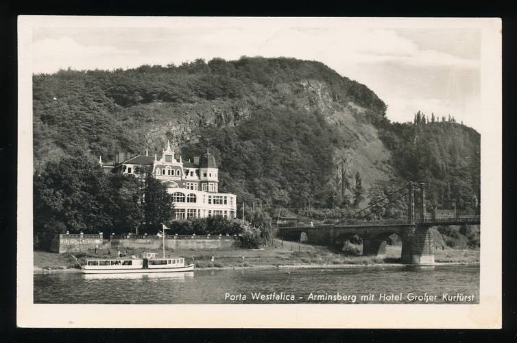
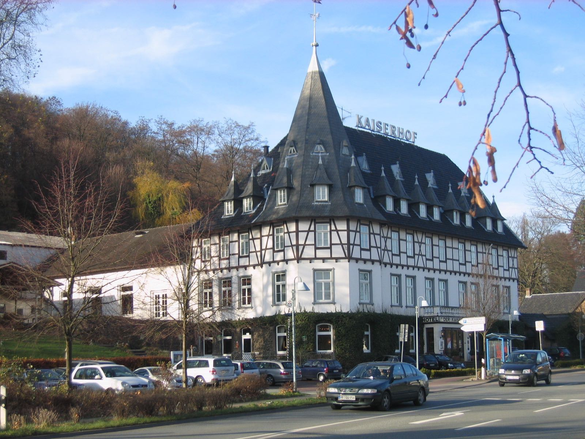
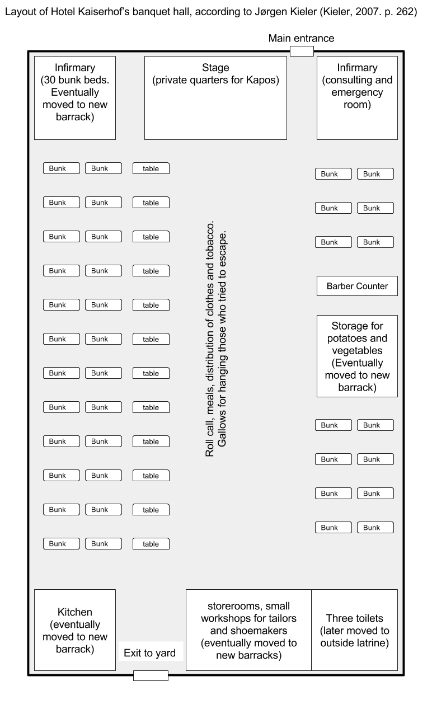
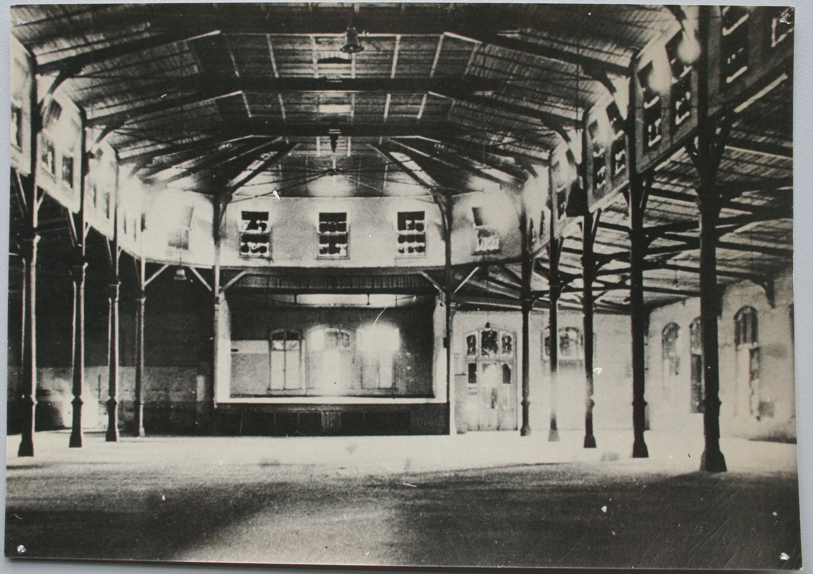

CHAPTER THREE Prisoners to Slaves
The nightly scenes of mistreatment, which I never took part in, were some of the most macabre forms of distraction.
- Aage Holger Christensen
In this chapter, survivors share memories of life at the concentration camp in Barkhausen and labor in the underground projects at Porta Westfalica. The chapter begins with a short description of Porta Westfalica’s creation from the Neuengamme Concentration Camp near Hamburg. Survivor accounts describe the SS and prisoner leadership in the camp, noting the turbulent relationship that existed between the prisoners and their direct overseers, who were fellow prisoners. Many survivors focused their descriptions on some of the worst Kapos they encountered, and a description of life in the Hotel Kaiserhof ballroom. A general narrative about daily life emerges by combining multiple accounts. Survivors detail the lack of hygiene, the daily work routine, the lack of food, the exhausting work, the many violent acts and deaths that occurred, and ways they found to cope in the degrading and squalid conditions. The chapter concludes with a very brief account of the prisoners’ liberation.
One of the main reasons we know anything about prison life in the camps in Porta Westfalica is because of the few writings of former prisoners. The most prolific writers are inmates from France, Poland and Denmark. Memoirs and books kept some information within public reach, but the towns inhabitants had virtually forgotten about the labor camps and deaths in Porta Westfalica until the early 2000s. Only a handful of survivor memoirs currently exist. The sources for this chapter come from these interviews, memoirs and questionnaires which belong to one French, one Polish, two Ukrainian, and thirteen Danish men. To give the narrative a more humane feel, the full name of the survivor, their age at the time of internment, and reason for being a forced laborer accompany each memory and event recounted in this chapter. For example, I introduce the first memory from the most prolific writer as “Jørgen Kieler, a twenty-five-year-old Danish resistance fighter.” The memoirs come from four books; Pierre Bleton’s “Das Leben ist schön!”: Uberlebensstrategien eines Häftlings im KZ Porta,1 Wieslaw Kielar’s Anus mundi: fünf Jahre Auschwitz,2 Jørgen Kieler’s Resistance Fighter: A Personal History of the Danish Resistance Movement, 1940-1945,3 and interviews with Gunar Hjelholt in Survival in the Organization: Gunnar Hjelholt Looks Back at the Concentration Camp from an Organizational Perspective.4 The remaining sources come primarily from questionnaires that the Danish government sent to survivors in the late 1940s, or writings by and interviews with survivors many years after the war.5
Neuengamme Concentration Camp
The two camps in Porta Westfalica, the men’s camp in the ballroom of the Hotel Kaiserhof in Barkhausen and the women’s camp in a field on the outskirts of Hausberge, were satellite camps of the Neuengamme Concentration Camp. Heinrich Himmler and Gauleiter Karl Kaufmann from Hamburg created the Neuengamme camp, just south and east of Hamburg, in December 1938, as an outsourcing camp of Sachsenhausen to accommodate the increase in prisoners of war.6 The SS gave the camp independent status as a grade two camp, a labor camp with hard labor and poor living conditions, in June 1940. With nearly 106,000 men, women, and children interned in Neuengamme from 1938 to 1945 only 13,000 were Jews. Table 3-1 provides a list of the number of prisoners from six nationalities at Neuengamme. Over 55,000 died in Neuengamme7, a total of 51% over eight years. At Barkhausen, the death toll was over 44% in just six months.8 As discussed in chapter one, the SS created many sub-camps, or satellite camps throughout 1942 as the need for labor increased. By 1944, Neuengamme had over 60 satellite camps, springing up wherever an industry had enough demand for labor.9 The SS established two of these labor camps in Barkhausen and Hausberge, with a second men’s camp located across the Weser from Minden at Lerbeck.
Table 3.1. Neuengamme Prisoners by Nationality.10
| Nation | Number of Prisoners |
| Denmark | 4,800 |
| France | 11,500 |
| Germany | 9,200 |
| Norway | 2,200 |
| Poland | 16,900 |
| Soviet Union | 34,350 |
SS Leadership
Inmates from the Barkhausen camp had considerable knowledge about the SS leaders of their camp. While inmates did not know all of the upper camp leadership, several inmates recalled guards and officers in detail. This section presents the camp leadership and provides details about the guards and SS leaders as described by survivor testimony. Commandant over all the Porta Westfalica camps, including Lerbeck, Barkhausen, and Hausberge, was SS-Oberstumbannführer Herman Wicklein. Head of day-to-day command at Barkhausen was SS-Rottenführer Hermann Nau11. Diplom-Ingenieur Anton Pittracher was in charge of the construction work and the use of laborers.12 Rudolf Stubber, SS-Obersturmführer, was chief of the works. A man named Diehl, head of the Gestapo in Bielefeld, carried out interrogations in the camp, and a man named Elsen or Olsen, also a Gestapo agent from Bielefeld, tortured prisoners during the interrogations. The camp doctor was a man named Pieber, and was responsible for a number of prisoner hangings.13 Survivors recalled the name of at least one SS guard, Walter Kuert. SS officers boarded and had offices across the Weser River from the labor camp, in an appropriated hotel, the Großer Kurfurst, which was within view of the Dachs I entrance.14 Guards were a mix of SS men and Luftwaffe soldiers. Because the factories built directly for the aviation industry, the Luftwaffe provided a certain number of soldiers to act as guards in the camp and worksites.
For the most part, prisoners had little contact with the SS leadership. Others, like Jørgen Kieler, a twenty-five-year-old Danish resistance fighter, who spoke German and had responsibilities within the camp infirmary for a time, met with SS leadership more regularly. Kieler recalled on one occasion that the SS doctor spoke to him civilly, even using the formal “Sie” when speaking to him.15 Carl Wilhelm Taxbro, a thirty-four-year-old Danish resistance fighter, noticed that when prisoners did come in contact with the SS because of jobs, they realized that, for the most part, the SS guards were there unwillingly. He noted that the relationship with the SS was pretty good for some prisoners, but for most it was dismal.16
Hermann Nau
Zachariassen recalled that Hermann Nau, the SS officer in charge of camp, hit him. “Once I was working with a jack hammer, which I had never done before,” wrote Zachariassen17:
I admit I was not in a hurry to do anything, when suddenly Nau stood by my side, punched me a few times in the face with his fists, and then beat me with his whip that he always carried with him. I was shocked because I did not see him coming. After he hit me he grabbed me by the collar because I still was not working fast enough. Since that didn’t work he kicked me in the groin. I don’t know why he then stopped, but I’m certain he gained some satisfaction from abusing me, because he suddenly stopped and walked away smiling.18
Zachariassen was also there when Nau beat two Frenchmen, one was the director of Citroen-Works, and the other was a director of a big cement company in France. It happened at a worksite where Zachariassen was helping them with brick laying. Nau came by and was not happy with their work so he began to beat them with a whip that he had with him. He beat them until they fell on the ground, and since he could not stand to see prisoners lying around, he kicked them in the side. As they tried to rise, Nau kicked them in their groins. Then he continued kicking them until he was satisfied, and left the worksite smiling. Zachariassen also observed Nau take cans and other goods that came from Red Cross care packages. He would take as much as he could carry, and take them to his lover in the area.19
Aage Holger Christensen, a twenty-six-year-old Danish resistance fighter, also saw how Nau beat the prisoners many times. He would hit prisoners with his fist whenever he could, usually during roll call. Christensen was unsure if Nau ordered the many punishments that prisoners received, but he was sure that Nau enforced them. Christensen recalled one incident where he saw Nau beat a Polish or Russian prisoner who had tried to escape. As guards brought the prisoner back into camp, Nau went right to him and started beating and continued until he could not anymore. Nau then sentenced him to the ring as punishment. For the whole next night, the inmate had to crouch, chained to the post, with an iron ring around his neck at such a height so that he could neither stand up nor sit down. The punishment was so repugnant and cruel to Christensen that he could not imagine that the prisoner survived through the night.20

Figure 3.1. Hotel Großer Kurfürst with Jakobsberg in the background and the foot bridge on the right.21
The Daily Struggle
The remainder of this section recounts the daily struggles the men endured in the camp at Hotel Kaiserhof and worksites in the tunnels across the Weser River and elsewhere in the area.
Hotel Kaiserhof
Work on the camp in Barkhausen began as early as March 19, 1944. The SS transferred two hundred fifty prisoners from Buchenwald, mainly prisoners who came from the Soviet Union and Poland, to convert the Hotel Kaiserhof in Barkhausen into a concentration camp.22 The restaurant in the front of the Hotel Kaiserhof still served meals to the local population throughout the time that it served as a living hell for thousands of men.23 The SS planned to bring fifteen hundred inmates to Barkhausen to assist professional German miners from the Saar who oversaw the creation of the underground factory space in the Wittekindsberg and Jakobsberg hills. By the end of the war, the Hotel Kaiserhof camp interned between thirteen hundred to fifteen hundred men. The official count from the KZ-Neuengamme Archive lists the number of prisoners at Barkhausen as thirteen hundred. Other sources, mainly interviews and memoirs of former prisoners, put the total closer to fifteen hundred. This dissertation recognizes the count from the KZ-Neuengamme Archive as the official number of prisoners as having the most accurate and up-to-date records. Wieslaw Kielar, a thirty-five-year-old Polish political prisoner who had previously been in Auschwitz since 1940, described his arrival day in Porta Westfalica noting with irony about how beautiful the area was and the ugliness of life that awaited them; something that many other survivors remarked on in their own accounts. Kielar described the suspension bridge that all prisoners used to cross over the Weser River from the train station to the camp as “handsome,” and the landscape as “magical.”24 Jørgen Kieler described the stairway to the hotel as “pompous.”25 After arriving, the men in his group lined up in rows of five and received instructions about camp rules and regulations.26

Figure 3.2. Hotel Kaiserhof in 2009.27 The hall where the barracks were located is in back of the hotel, extending to the left of the photo.
Ballroom at Hotel Kaiserhof
During March 1994, the two hundred fifty concentration camp inmates from Buchenwald converted the ballroom of the Hotel Kaiserhof into a labor camp. They built three- and four-story bunks, desks, benches, and added barbed wire to the windows. Inmates lodged in a long ballroom attached to the main hotel by way of a long hall. The three buildings formed a small courtyard surrounded by barbed wire three meters high, with two machine gun towers on the outside and patrolled by guards and dogs. The yard was small and the ground was plain dirt so that when all thirteen hundred prisoners were outside, they were “packed like herring in a can” and stood in several inches of mud that soaked through clothing.28 The camp had latrines for twenty-six people to use at a time, located at the opposite end of yard. They were in constant use.29 The hall measured eighty-five yards by thirty yards, with windows blacked out, and there was no heating. Bunks were on one side of the hall with the middle used for roll call, meals, distribution of clothes, and other group activities. In the middle, hung over the rafters, was a noose used to hang escapees or other rule breakers. Kapos used a stage near one end of the ballroom, which they had partitioned off with curtained dividers for their personal living quarters.30 The hall was unheated, so it was generally just as cold inside as it was outside.31
Sleeping conditions were sickening. Bunks were four levels high, two feet wide and six feet long, and spaced one foot apart.32 They were situated on the north side of the hall, in the coldest spot.33 About seven hundred beds were available, but only five hundred had a straw or cotton mattress, which meant some prisoners slept on bare bed boards. Bedding consisted of dirty, thin blankets that were never washed and straw mattresses that were also never cleaned. Each bed had a dirty woolen blanket, many had two, some had one, and some had none, but every night inmates used a different blanket.34 Camp rules stipulated that prisoners sleep in only their underpants and under shirt, but due to the cold many wore their sweaters, stockings, or even all of their clothes to bed. When not worn, clothing was often used as a pillow or otherwise kept close to the body. Otherwise coats, hats and gloves would often disappear during the night if not carefully hidden or protected.35 Many survivors complained that there were never enough beds for the number of men in the camp. Kaj Bjørn Karbo, a twenty-four-year-old Danish resistance fighter, recalled that by October 1944 the number of Danish had increased to two hundred, and there were already eight hundred Russians, and five hundred others from different nationalities. About half of the prisoners needed the beds since they worked in two shifts, so there was always a race to get bedding. This also meant there were usually two to three men sleeping per bed.36 Since the Danes worked mostly in the mine, they were last to camp and often had to sleep in their clothes on the bare boards of the bed. One could not be too picky when selecting a mattress or blanket, Karbo recalled, because they were usually soaked in urine or covered in feces and always full of lice. Lice drove Karbo crazy the first few days, but then he grew so used to them that the bites hardly itched.37
Lice were not the only pest to infect the beds. Guards led Danish prisoners in Vincent Lind’s group to the ballroom and gave them coffee, bread and marmalade. Sitting on the four level beds they discovered fleas covering the beds. “Fleas! A swarm of fleas. The fleas had favorites, right?” recalled Lind. “And I was a favorite of the fleas. It was terrible! I was always full of it! And I killed hordes, but there were a million of them. And they do a lot of harm! And they itch! And you can get infected.”38 When on the day shift, inmates usually got six or seven hours of sleep between 10 PM and 4:30 AM. Sleep was always broken by needing to use the toilet, anywhere from three to ten times a night, and even roll call. Several times a week Kapos performed unannounced inspections looking for contraband clothes, cement bags or blanket pieces (which inmates used to pad clothing for extra warmth), extra blankets, food, knives and bowls.39 Axel Hansen recalled that they slept with only a very threadbare blanket, on thin straw mattresses. They slept in their shirts, using their clothes for a pillow. The air in the building was cold because there was no heat. “It was hell,” Hansen declared.40
Initially, the camp had a bathroom in the building for night time use.41 Their food was often so rotten that inmates quickly developed dysentery and other illnesses. These sicknesses left inmates too weak to leave their beds to relieve themselves. Toilets existed, but there was no toilet paper. Showers and workshops were originally located in the hall, but the swelling number of incoming inmates at the end of the year quickly overwhelmed the original facilities. In December, the SS constructed a new building in the yard with fifteen showers and twenty-six water faucets. The SS also built a bathroom in the yard for use during the day, but at night inmates were not allowed to go in the yard. Inmates reported that these accommodations were still not enough for the number of prisoners living there. Before the dedicated shower building, inmates used a two-meter high pipe with holes in the courtyard. This primitive shower served thirteen hundred men.42

Figure 3.3. Diagram of Hotel Kaiserhof ballroom.43

Figure 3.4. Hotel Kaiserhof ballroom.44
The Prison Infirmary
The infirmary was initially located in the ballroom off to the side of the stage, separated from the rest of the room by a screen. Medication was basic and nutrition for those in the infirmary was no better than that given to the other inmates. The irony of a health clinic in a labor camp designed to work people to death was not lost on the prisoners who went there as a last resort. Even the sick in the infirmary had to use the latrine in the yard. If they were physically unable to make it to the latrine there was a metal bucket with sharp edges. Even though the SS built a separate building for the infirmary in December, it had no glass in the windows for a time. There was no waiting room, so the sick waited outside in the cold and elements for some time before entering the building. All of these factors meant only the really sick ventured to the clinic.45 By the end of November, the number of Danish deaths was troublesome for the Danes and also the SS. To combat the spate of deaths, the SS reassigned Jørgen Kieler, a Danish medical student and resistance fighter, to the clinic. A Czech dentist was in charge of the infirmary. A Georgian pharmacist and an actual doctor from Poland were next in rank, followed by a French medical student and Jørgen Kieler. According to Karbo, the medical students were the best at providing care. Kieler brought organization, cleanliness, and health to the clinic. He organized the beds by sickness, sanitized the bedding, and cleaned the floor. Shortly thereafter camp officials transferred Kieler to work in the mine. “A doctor who makes people well could not very well be tolerated in an extermination camp,” Karbo commented in his memoir.46
Inmates
Inmates consisted of prisoners of war, political enemies, resistance fighters, criminals and the asocial. The camp represented many nationalities including German, Danish, Russian, French, Polish, Czech and Hungarian. Soviet and Polish inmates outnumbered the other ethnic and national groups by far. Danish inmates accounted for about 13% of the total number of prisoners. Soviet inmates were predominantly prisoners of war. French, Czech, and Hungarian inmates were mostly political prisoners. Danish prisoners were almost all political prisoners, captured in Denmark as part of the active resistance against the Third Reich. Some Danish inmates were homosexuals or unfortunate men who were caught in the right place at the wrong time and taken prisoner by Nazis in Denmark. Unfortunately, not much is known about prisoners from other nationalities. I found no personal memoirs or reports that described how Polish, Soviet, Hungarian and French inmates came to Barkhausen. Because the path of Danish prisoners to Porta is known, the history is recounted here in brief.
Danish Prisoners
Before 1943 the Danish government insisted on, and kept, political, asocial and other Danish prisoners of the Nazis in prisons within Danish boarders because Danish leaders wanted to keep their citizens out of Germany.47 As resistance movements increased, though, Nazi leaders began to break agreements with Denmark by moving some prisoners to German camps, where they could then do anything they wanted with the prisoners. Life in the Danish prisons was not easy, as there were interrogations and torture, but prisoners were generally given clean bedding, toilets, and sufficient food.48 The first large deportation of Danish prisoners was in the fall of 1943. Danish political prisoners, usually communists, went to Stutthof near Danzig. Resistance fighters, Danish and Norwegian, went to Sachsenhausen. After the first deportations, the Danish government insisted on keeping Danish prisoners in Denmark, and built a special prison for Nazi use in Frøslev. The Danish opened the prison on August 13, 1944, but it was only in use for a few weeks before the Germans again broke agreements and deported two hundred prisoners to Germany.49 These prisoners travelled from the prison to the train station by truck, so that the public could not observe their departure. They were then transported to the Neuengamme Concentration Camp near Hamburg by train. En route to Neuengamme, they survived an Allied bombing raid on Hamburg where prisoners heard debris hitting their train cars. Once they arrived in Neungamme they handed over any clothes and personal items, including wedding rings.50 SS guards then shaved their heads and pubic hair with blunt clippers. This was officially done to delouse the prisoners, but the intended purpose was to further dehumanize, disparage, discourage, and demotivate. New prisoners received ill-fitting and dirty prison garb, and a number beginning with 50 (50123, 50245, etc.). Neuengamme was a terrible prison with diseased and dying men and women crammed into barracks.
While in Neuengamme news of work camps circulated. Many Danish prisoners, who were relatively healthy compared to other prisoners who had been in camps much longer, decided to join the work groups in hopes of a better situation. They thought the Nazis meant for them to work, and would therefore treat the prisoners better. On September 18, 1944, nearly two hundred prisoners, including ninety-eight Danish prisoners who had come from Frøslev, left for the work camp at Barkhausen. Prisoners sat in four cattle cars, fifty men to a wagon, twenty-five on either side, with the doors locked. The men had only an old jam bucket for a toilet to last the entire trip. Prisoners had to sit on the floor with legs apart, and another person sitting between his legs, keeping that position for the 42-hour trip to Porta Westfalica. Two SS guards with submachine guns and whips kept watch inside the car at all times. After arriving at the train station in Porta Westfalica, they crossed a footbridge over the Weser River and arrived at a beautiful timber framed hotel, Hotel Kaiserhof. Some thought they had perhaps made a wise choice if they were to be lodged in a posh hotel. Rather than enter the front door, the guards marched the inmates around to the back of the hotel, to a run down ballroom. Survivor Jørgen Kieler remembered seeing the Latin words “HIC MORTUI VIVUNT” written in coal on the whitewashed wall as they entered their new prison.51
Prisoners arrived at various times between March and December 1944. Kaj Bjørn Karbo came to Porta Westfalica on September 21, 1944, with a group of ninety-nine Danish prisoners. They spent only two days and nights in Neuengamme, and then two more days and nights by train in a French cattle car on the way to Porta Westfalica. Karbo remembers the SS soldiers as “large nosed” men who would beat the prisoners if they moved, and would openly enjoy the looks of hunger on the prisoner’s faces as they smoked cigarettes.52 When Jørgen Diemer, another Danish resistance fighter, arrived, most likely at the same time as Kaj Karbo, there were, by his estimate, already thirteen hundred men in the camp. Diemer arrived by train on a Tuesday night. The guards forced them to stay in the train car until Wednesday morning, even though they had already traveled two days and nights, sitting on the floor.53 Axel Christian Hansen, another Danish resistance fighter, arrived with a later group on October 3, 1944.54
Other Nationalities
Known records from Soviet prisoners are very few. This section uses two reports from Ukrainian prisoners, and their descriptions of prison life and work are rather sparse. Dimitrij Iwanowitsch Zwagorskij, from the Ukraine, came to Porta Westfalica in a first wave of inmates from the Neuengamme camp, but did not remember the date.55 This chapter also uses one memoir from a French prisoner, Pierre Bleton. I was unable to find reports from survivors of other nationalities. Unfortunately, experiences from Soviet and Polish prisoners, the large majority of prisoners in the camp, are the minority in this representation of their history.
Inter-Prisoner Relationships
The camp at Barkhausen was an international community. According to Vincent Lind, a nineteen-year-old Danish resistance fighter, the Danish worked well with the Russians, but it was harder for them to work with the Polish. A Georgian named Gregor was a pharmacist before the war, and while in Barkhausen he was in charge of the infirmary. One could always go to him for something to help with the fleabites, remembered Lind. He also remembers that there was a German in the camp. The Wehrmacht called him to the front lines in December 1944. Gregor had told Lind that there were many Russians in the beginning. According to Gregor, the Soviet prisoners came to Porta Westfalica after the Germans withdrew from Ukraine. Many of them were collaborators and young “half-criminals” (halbkriminelle), some of them 12 to 16 years old, who came to Germany looking for work. But as often happened to foreign workers, the penal system arrested them for “criminal actions.” After spending time in prisons the SS acquired many of these “felons,” put them into the concentration camp system, and later sent them to Porta Westfalica as slave laborers. By the time Lind arrived, only 2% of the Soviet prisoners remained.56
Some Danish survivors made friendships that spanned political and national differences, and even lasted after the war. But the “antisocial” and “political” Danish prisoners noticed discrimination in the camp and after the war.57 German leaders in Denmark routinely captured Danish citizens they feared were collaborating with the Allies to allow them to invade Germany through Jutland. “Antisocial” prisoners were criminals, unemployed, homosexual, or people in the right place at the wrong time. The political prisoners, for the most part resistance fighters, showed distrust and often despised the “asocial” prisoners. The resistance fighters felt the antisocial prisoners were in prison without cause. They had not fought for their “right” to be in prison. This derision also lasted after the war. Danish commemoration groups excluded the asocial prisoners. They called their group “the 50 from Porta,” referencing the numbering system which began with the number 50. Asocial prisoners had numbers beginning with 54.58
Historian Jens-Christian Hansen notes that there were no illegal organizations among the prisoners as there were in other concentration camps. Prisoners were too exhausted from hard labor to orchestrate any sort of organized resistance or collaboration. They had no time to organize because they worked twelve-hour shifts every day. They were also too weak from malnourishment. All news from the outside was through rumors from those who worked with civilians.59 Aage Holger Christensen, a twenty-six-year-old Danish resistance fighter noted that prisoners obsessed about news of the war. To many, the advancing Allied troops gave hope for survival. Some prisoners followed the course of the Allied troops by organizing German newspapers scavenged from the trash or left by civilian workers in the tunnels. Christensen was able to track the progress of Allied troops on a map that belonged to a Russian bed mate. Some prisoners worked in locations where they could hear news about the war from radio broadcasts. Christensen noted that he never had direct access to radio broadcasts.60
Prisoners of other nationalities often felt that Kapos and camp guards gave preferential treatment to Danish prisoners. They wrote and received letters, and received Red Cross packages several times while at Barkhausen. This contention often lead inmates to steal food, clothing, and other personal items from the Danish prisoners.61 Danish prisoners received preferential treatment in the infirmary as well, but among them it was every man for himself. One day as Vincent Lind was in the infirmary with three other Danes, a nurse brought them a cup of milk, something only the Danish prisoners received. Milk was something so seldom seen that they did not even care that it was sour. As the nurse brought over the cup to the four sick men, all lying close together, he said, “For the four Danes,” and handed the cup to one inmate. Instead of passing the cup around, the first inmate drank the whole cup himself. Lind felt paralyzed with astonishment. He and the man who drank the cup of milk were the only two of the four that survived the war. They met together every year after the war but neither of them ever spoke of that event.62
Danish survivors often spoke fondly of Russian prisoners, though. For example, Vincent Lind remarked that the Russians could sing beautifully, and they sang often. On Christmas Eve, they sang religious songs as well as a professional choir.63 Not all remembrances were good. One time, a Russian stole something from Lind. He followed and began a fight with the man, but was soon surrounded by twenty Russians. He left his things with the Russians.64 Wieslaw Kielar, on the other hand, was not fond of the Ukrainians. According to Kielar, the majority of prisoners were from the Ukraine. They came voluntarily to work in Germany, but ended up in concentration camps for various crimes—sabotage, theft, or escape attempts. Kielar described them as “ruthless and brutal” prisoners who “terrorized the cultured, weak, undernourished Danes.” Kielar was not very favorable in his outlook about the Danes. He noted that they were often in the infirmary with diarrhea because they received packages and ate everything at once. Their bodies were not used to such rich food, so they easily became sick. “Only those whose parcels got lost stayed alive. Such was the irony of fate,” wrote Kielar.65
Prisoner Hierarchy
Survivors described six Kapos and a few other camp leaders in great detail. All survivors recalled the camp elder, Lagerältester, the most and with the most hatred. Survivors describe most Kapos with disdain, but recalled some camp leaders with fondness. The camp at Barkhausen consisted of thirteen hundred men from seventeen different nationalities. Differences in language and culture, coupled with the harsh and stressful conditions led to contentions among the prisoners. Only one hundred fifty-nine SS and Luftwaffe guards managed the prisoners in camp and at the work site.66 Three levels of inmate staffed overseers made up the organization among the prisoners within the concentration camp. The SS selected which inmates became leaders in the camp. Regular prisoners had no rights and were at the mercy of any and all prison overseers. One level up from a common prisoner was a Schieber, or pusher, who would ensure that prisoners worked by beating them with rubber truncheons, sticks or anything readily at hand. Overseeing the pushers were a series of Vorarbeiter, or foremen, who were in charge of small work groups, and were sometimes able to pick the prisoners in their group. All prisoners were overseen by a band of Kapos (Kameradschafts-Polizei). The SS chose the Kapo from amongst the prisoners. They were usually German criminals from other concentration camps.67 The SS expected the Kapos to mistreat their fellow prisoners just as the SS did, and demoted those who did not. Once demoted, Kapos did not last long in the ranks of their fellow prisoners.68 Kapos were also given more meat with their food, and some alcohol. Some of them gave the SS officers sexual favors, as well as taking partners from the pool of fellow prisoners. Kapos were usually German, Russian, Polish, with a few recorded Czech, and a very few Danes.69 Kapos had absolute power over their fellow prisoners, and were merciless in punishing prisoners who they felt had violated the rules of the camp. Kapos wore a green triangle and were usually criminal inmates, while political inmates wore a red triangle.70 These three levels of oversight meant that the prisoners managed themselves, leaving the SS and Luftwaffe guards with relatively little to do.71 The system and positions in the prisoner hierarchy were a copy of the Neuengamme (and other concentration camp) systems for prisoners to self-regulate.72
Table 3-2. Comparison of Prisoner Hierarchy
| Neuengamme | Porta Westfalica |
| Lagerältester (camp elder) | Kapo |
| Blockältester (barrack elder) | Vorarbeiter (foreman) |
| Stubendienst (barrack room duty) | Schieber (pusher) |
Jørgen Keiler lamented that many Kapos, Vorarbeiters and Schiebers were decent people who had been destroyed by the system. “We were always threatened by the Kapos, who had the task, so to speak of, to exert a certain type of terror,” survivor Vincent Lind recalled. “They could be so arrogantly friendly. But basically there was always the threat of a beating; which happened again and again.” Germans were the most common nationality of the Kapos, although Lind remembers a Czech and a Russian.73 Survivor Jørgen Diemer saw only Kapos and fellow prisoners give punishments, usually the German Kapos, and had a very negative view of them. The SS men would only hit prisoners. Almost all German prisoners in Barkhausen were criminals or gangsters. The Kapos were violent criminals and pimps, and even a robber and murderer. In Diemer’s view, they were all mentally ill.74 Kielar recalled an incident with Kapos who took his nice boots the first night. He went to bathroom barefooted and when came back to his bunk, his boots were gone. Another prisoner pointed out where they were; two Kapos in the shoemaker shop were admiring them. After a brief discussion Kielar miraculously got the boots back. Later, one of the Kapos from the shoe repair shop offered to buy his boots, but Kielar was able to resist the offer. He quickly found and applied black shoe polish to his brown boots to make them less conspicuous.75
George Knögle (Schorsch)
The camp elder (Lagerältester), or head Kapo, at Barkhausen was a red haired, ill-tempered, brutal man with the nickname Schorsch; his real name was Georg Knögl, or Georg Gnoggel. He was an excessive alcoholic, a former pub owner from Nuremberg, a criminal, and a sadist.76 He would often trade food to get alcohol, and was unpredictable and brutal. “He was the master of life and death in the camp.”77 Schorsch was about fifty years old, about five-and-a-half-feet tall, slightly humped-back, with straw red hair, no teeth and a strongly curved nose. Everyone believed him to be mentally ill.78 He had been in prison camps for eleven to twelve years.79 Many prisoners believed him to have a hand in any maltreatment that happened in the camp.80 Schorsch could not walk past “prisoners without hitting, threatening or swearing at them.”81 He was almost always drunk because his position allowed him access to alcohol. Some Sunday afternoons when he was not drunk he would play his accordion.82
Karbo recalled an incident with Georg Knögl, who he described as an “insane redheaded sadist.”83 Knögl would often go into a rage over anything. During this one instance when coming from the latrine in the middle of the night, Karbo witnessed a Russian prisoner running towards him followed by Schorsch who caught up to him and beat him with a board from a bed over the head so that the prisoner fell down. Schorsch immediately started beating him on the head with a rubber truncheon until his face was unrecognizable. After he tired of beating the prisoner, Schorsch drug him to an iron ring in a corner of the hall stuck the head of the Russian into the ring, and then continued to beat him all over for fifteen minutes, then went to drink from his stash of alcohol. While Schorsch was gone another Kapo freed the prisoner before Schorsch came back. This he did, wrote Karbo, not for humane reasons, because he was also sadistic, but because he had a homosexual relationship with him. Karbo, the only one to talk about the subject, mentioned that homosexuality thrived in camp. The Russian was by this point unconscious. Karbo was uncertain as to the fate of the Russian, but it seemed impossible that he could have survived.84 Karbo also recalled that Schorsch beat him on the last day before they left the camp. They had received Red Cross packets that day, and the SS guards had taken most of the contents. Karbo complained to the Kapos about the amount of items that had been taken from their packets. He did not think anything would happen since they were so close to leaving. Schorsch became very upset and said it was the SS men, not him, who took all of the contents of the packages. He punched Karbo several times in the face and where ever else he could. Schorsch then smashed a packet of crackers over his head to underscore that it was not him who stole the contents. He then took two bars of soap from the package and walked away from Karbo.85
Christensen recalled that some prisoners accused a Russian prisoner of stealing bread. It was not absolutely clear if he had done it or not. The prisoners brought the Russian to Schorsch who beat and kicked the prisoner so much that it was a horror to watch. But that was not enough for Schorsch. He continued the beating with a rubber truncheon, and then he used a board from a bed. Other prisoners had to carry the Russian out after the beating. Christensen did not know what happened to him.86 Georg Knögl also stole from their packages. After the SS took any “forbidden” items, Georg took whatever he wanted. He was the evil spirit of the camp, recalled Christensen, and everyone was afraid of him because he would just start beating any prisoner who came by.87 Charlie Jörgen August Rasmussen, a forty-four-year-old Danish resistance fighter, recalled that the worst violence he witnessed happened to a Polish prisoner suspected of stealing potatoes. Schorsch tied the Polish man’s hands behind his back and put him in a chair which was set upon a table. He then tied a rope to the man’s bound hands and looped it over a hook on a pillar. Schorsch then kicked the chair from under the prisoner so that he was hanging by his arms which were bent backwards and upwards. The prisoner lost consciousness, so Schorsch threw a cup of cold water on him. When he came too, the whole process began again. This continued until the prisoner confessed to stealing the potatoes.88 Rasmussen also witnessed Schorsch strike down a Russian prisoner with a stool. The prisoner was soon physically healed, but he was mentally ill the rest of the time he was in the camp.89 Arne Zachariassen, a thirty-nine-year-old Danish resistance fighter, observed many times that Schorsch would beat prisoners to the ground with a stool or other object. Zachariassen was certain the prisoners in those instances only lived for a few more hours.90
Erik Sundö, a twenty-five-year-old Danish resistance fighter, recalled a February 1945 incident where he saw a Russian or Pole steal a knife from a fellow prisoner. After hearing of the incident Schorsch and another Kapo kicked him as he lay in the snow until he bled. Schorsch ordered the prisoners to leave him to lie in the snow. A couple of nurses attended to him anyway, but it was uncertain to Sundö what happened to him.91 Sundö remembered another incident where a Russian stole something. Schorsch beat him with an iron bar with a hook on the end. The hook went deep into his head so that blood and brain matter came out.92 Sundö also recalled the incident that lead to the death of fellow Danish prisoner, Poul Gerner Mikkelsen. While Mikkelsen was sick with dysentery he urinated in the blanket while in his bunk. A Russian told Schorsch, who then proceeded to box his ears. The next day when Mikkelsen needed to relieve himself, he could not make it out of the fourth level bunk he was in, so he peed in a bowl. A Russian prisoner told the Kapos who sentenced Mikkelsen to a beating. A few Danes decided to intervene and asked that a Dane be able to administer the punishment, in hopes of lessening the punishment. A Danish spokesman named Schlosser volunteered to administer the beating. He beat Mikkelsen on the back fifteen times with a board from a bed, the most common punishment. Schorsch was not satisfied and ordered Mikkelsen to spend the night in the morgue where it was forty-one degrees Fahrenheit. Schorsch then locked him in the latrine for three days without blanket or mattress or anything else. After three days Mikkelsen went to the sick bay, but died shortly thereafter.93 Schorsch also beat up Sundö. Someone accused Sundö of trading something from his Red Cross package for a piece of meat, a forbidden act. Nau, the camp commander scolded Sundö and then let him go. Schorsch was not satisfied and laid Sundö over a bench and beat him with a truncheon twenty-five or twenty-six times. Sundö never made a noise which made Schorsch angry. When Schorsch had finished, Sundö turned his back on him to leave. Enraged at this, Schorsch hit Sundö over the head with the stick.94 Jørgen Kieler saw Kapo Schorsch beat a starving German prisoner to death who could not hold in feces or urine. Schorsch beat him with a board from a bunk bed until his bones were visible. The prisoner died shortly after he came to the infirmary95
Kapo Otto
Survivors told similar stories of violence and inhumanity about a Kapo named Otto. Otto was first Kapo, just lower in rank than Schorsch, thirty to thirty-five-years old, about six feet tall, relatively thin, with extraordinarily long arms, a slightly hunched back, and rounded shoulders. Rumors in the camp were that Otto was a communist, but he later became a member of the SS. The rumor in the camp was that he had a high rank in the SS. He left the camp around Christmas 1944. All of the survivors that remembered Otto recalled that he was a very good boxer.96 Karbo wrote that while he was working to build supports in a mine, there was a cave in and they were stuck in the mine for a long time. Camp rules forbid inmates to relieve themselves while working in the mine, but a Danish man, Customs Official W. from South Jutland, was suffering from dysentery and could not hold it until they returned to camp. After he relieved himself, a Russian prisoner told Otto, who came right away. A kind Polish foreman suggested that he knock W. down and that he stay down when Otto came, to convince him that this was enough punishment. They did this, but it was not satisfactory for Otto who pulled W. up from the ground and punched him until he fell again. This he did eight times. After this W. was very sick and died. Karbo was certain that the beating from Otto lead to the prisoner’s death.97 Christensen described Otto as an Arbeitskommando in the Weserstollen, and not as bad as Schorsch, but similar in many ways. He was a very good boxer and used prisoners to keep in shape. Christensen recalled one event where inmates accused a German prisoner of stealing an apple. Otto beat him until his face was unrecognizable.98 Rasmussen also called Kapo Otto a sadist. He was German and a homosexual, and he abused prisoners most horribly. Rasumussen saw him beat prisoners many times.99
Zachariassen wrote of another Kapo named Otto. It is possible that he is the same as that mentioned before, but Zachariassen reported this Otto as Danish, rather than German. Also possibly marking this as a different Kapo, Zachariassen does not mention this Otto as a boxer. Zachariassen writes that this Kapo Otto was a Danish prisoner who came in the middle of September. In the beginning he was pretty easy on his fellow Danish prisoners, but that soon changed to the opposite. He had openly sexual relations with young Russian prisoners. If one was not friendly with these prisoners, then it would go badly for them. Zachariassen was there when one time, during the nightshift at Weserstollen, Otto came back to the worksite after a sexual interaction with a Russian prisoner, and in a bad mood, began to beat the prisoners in the direct vicinity with a stick. One of the prisoners was the Police chief Aage Agersted from Aabenraa. Many times Zachariassen saw Kapo Otto take 90% of the contents of Red Cross packages. The Wehrmacht released this Otto around Christmas time 1944 and sent him to the front line as a German soldier.100
Kapo Hans
Rasmussen noted that another Kapo, named Hans, abused prisoners daily. He recalled a time when they were standing in line waiting for food. They were all very hungry, and those behind were pushing to get in front as soon as possible. During the kerfuffle Rasmussen found himself pushed out of line. Hans, who was standing next to them to keep order, quickly shot over to Rasmussen. He punched Rasmussen with a balled up fist multiple times in the face, knocking out his top front teeth.101
Kapos Fritz and Paul
Zachariassen offered details on the greatest number of violent Kapos and SS leaders. Zachariassen wrote that Kapo Fritz was a leader of the shoe repair group. A cynical and brutal man, who would take contents of Red Cross packages. When confronted about the thievery, Fritz would claim the rats ate it. If a prisoner protested more, he would beat the prisoner. Fritz had contacts outside of the camp and received payment in kind for repairing shoes for various subordinate SS men. Camp rules strictly forbid such transactions. Afterwards SS guards demoted him to a foreman on the night shift in Kippstollen.102 Zachariassen wrote that Kapo Paul was most known for his intimate relationship with the room attendant (Stubendienst) Ossie. Zachariassen also wrote that in one brutal punishment Kapo Paul gave five strokes on a prisoners back so hard that the inmate went unconscious.103
Kapo Josef
Christensen wrote about an Austrian prisoner named Josef, who was forty or fifty years old, five-and-one-half feet tall, had an ape-face, sloped shoulders and very long arms, a hunchback, and he “looked like a freak.”104 Not only did he hit prisoners all the time, but he would have berserk like seizures. He would beat with anything he could get his hands on; iron bars, shovels, spades, etc. He did not beat everyone, but picked out a victim that he beat every time he flew into a fit of rage. Christensen was unfortunately one of those victims. On the first day in the work command, Christensen mentioned to a comrade that they were in the worst command because they had to work out in the open. Kapo Josef overheard this and and gave Christensen his first beating. Christensen noted that it would not be an exaggeration to say he got a beating every day. Christensen wrote that was beat without reason. Josef would beat so many people and send them to the infirmary, that he received beatings from the SS because he beat too many prisoners near to death.105 Christensen heard about an incident the day after his first punishment. The SS had just forbidden Josef to beat anybody, at least as hard as he had in the past. As they were coming back from the worksite that day, Josef began to have a fit, but he just stood in the path with hands in his pockets, his face turning ever redder. Finally, he exploded, grabbed a shovel and ran into the nearby forest where he beat a tree until he was calm again.106
Kindly Kapos
Not all in the prison hierarchy were vicious and evil. Camp guards selected Karbo as a Schieber in January 1945, the lowest rung of prison hierarchy. He was in charge of a sixteen-man work gang that helped German civilian workers build the factory in Jakobsberg.107 The next highest up in Karbo’s prisoner hierarchy was a Kapo named Ernst. Karbo wrote that only good can be said of him. “He helped us where ever he could and he used us a lot.”108 Other positive interactions with prison hierarchy included another Kapo named Fritz. Zachariassen wrote that Kapo Fritz was a German political prisoner because of his communist beliefs. Zachariassen worked as a translator in the camp and was often with Fritz when he went to deliver punishments. Many times it was certain that a prisoner had committed a crime, such as stealing food from another prisoner, but instead of punishing the man himself, Fritz would let the leader of the prisoner’s nationality have responsibility for inflicting punishment. Such punishment was usually less severe because prisoners tended to look after those of the same nationality. For Zachariassen, Fritz was an example of someone who did not lose their respect for an individual’s rights and humanity, despite his own loss of freedom.109 Another humane individual was the camp clerk, Mr. Magnussen. Zachariassen described Mr. Magnussen with high praise:
As soon as the Danish deportees arrived at the Porta satellite camp, we were introduced to the camp clerk, Mr. Magnussen from Flensburg, and had some knowledge of the Danish language. In the six months of our stay in Porta, Mr. Magnussen was a good and helpful friend to many prisoners, not the least of which the Danes, and it was with great concern when all of the Danes left as part of Graf Bernadottes operation on March 19, 1945, that we could not bring Mr. Magnussen with us, who we knew to be a man on our same wavelength.
In the hardest times for us Danes, as it seemed that every hope was out of the question, as we saw many of our compatriots cower, Magnussen had a particularly strong need to help us through the darkest points, and since Magnussen was in the camp before and after us, I don’t doubt, that he is able to provide more enlightening information.110
Jørgen Kieler wrote fondly of fellow resistance fighter Nikolaj Nikolajsen. Kieler described several instances where Nikolajsen was always ready to help others, even prisoners of other nationalities. On one occasion, after a shift of work in Jakobsberg, a Russian prisoner was too ill to make it back to camp, so Nikolajsen carried him the whole way. Nikolaj also stopped a fight set up by Kapos. When Danish inmates received Red Cross packages near Christmas, the Kapos distributed the packages in such a way that all other prisoners were acutely aware of the food they were about to miss out on. All of the other prisoners were ready to attack when Nikolajsen intervened and got them to pause, and encouraged the Danes to share their food.111 Unfortunately, Nikolajsen died of starvation and tuberculosis on March 3, 1945, in the infirmary, under the care of Kieler.112 He missed liberation by one month.
Hygiene and Clothing
Prisoners usually arrived with very little. What they did possess the SS guards took from them and replaced it with a standard set of prison garb. Underpants and undershirt were made of shirt material. When possible, inmates used foot wraps instead of socks. The standard uniform was a pair of striped pants and jacket with numbers on the right thigh and chest, a coat in winter, canvas boots, and a striped cap. In severe frost inmates received striped earmuffs and striped mittens. Everything was without lining, but in the beginning they were at least clean. Some boots came without shoelaces so steel wire or inmates used other materials. Inmates received leather boots first, then canvas shoes, and some prisoners received wooden shoes.113 Prisoners received a change of underclothes only a few times during the many months there. Inmates never changed or washed their outer clothing. If prisoners did not keep constant watch over any piece of clothing, other prisoners would take it. Prisoners reported losing jackets, winter coats, caps and cigarette containers. Sharing and loaning clothing was a risky venture that inmates rarely engaged in. Taxbro recalled a time when he loaned his coat to a fellow prisoner, but it was never returned, and there was no hope of obtaining a new one.114 Other personal items included soap, shreds of a scarf to put around the neck, paper yarn, and paper from cement sacks to line the clothing. Inmates also possessed pipes, belts, spoons, knives, and hand towels. They received a weekly ration of cigarettes, which they could trade for other necessities.115 The Red Cross sent two clothing packages to the Danish while interned in Barkhausen. The first package contained warm underwear. Prisoners were later required by the SS to trade the warm undershirt for a thinner blouse. Prisoners never saw the thick jacket or pants that were in the packages. The camp did issue the sweaters, socks, bandanas, and ski caps.116
Axel Hansen described the hygienic conditions in Porta Westfalica as quite terrible. When prisoners arrived in Neuengamme the guards shaved their whole body with dull hand shears. For a haircut, they received an “Autostraße.” Kielar described this process and a nickname they gave the hair style. The guards “ran the clippers across the center of the head, from the forehead to the back of the neck, thus forming a path which someone facetiously called louse avenue. Not at all a misnomer, as we discovered before long, for the place was crawling with lice, fleas and bugs.”117 During his time in Porta Westfalica, Hansen had his head shaved with an Autostraße three times. He was never able to wash his hair.118 Taxbro recalled receiving the “Autostraße” six or seven times. He also had his whole head shaved.119 Karbo noted that Georg Knögl, and other Kapos and prisoners with a position, did not have their heads shaved.120 Prisoners easily remembered Knögl because he had a shock of red curly hair.
The camp in general was extremely dirty. Karbo remembers that prisoners cleaned the floor of the Kaiserhof Hotel ballroom once in six months, and only with cold water. There were only twenty-one faucets for the thirteen hundred men, and only thirty minutes allowed for washing. Inmates took showers with cold water and the monthly allotment of loam for soap lasted only a week.121 Generally there was no time to wash in camp, and only sometimes did a prisoner find a place and time to wash at the worksite with water or snow.122 Only five hundred bowls existed in the camp. With thirteen hundred men, the bowls were used on average three times for each meal. Inmates had no time to wash the bowls, so a prisoner could easily get a bowl that had just been licked clean by a comrade with tuberculosis.123 The toilet situation was just as dismal. Feces covered the toilets, floors, walls and ceilings in the lavatories. The sick with dysentery used the same toilets as those who were not yet sick. The toilets were roughhewn wood latrines with fourteen holes cut in the wood and positioned over a cement trench. There was no toilet paper.124 Kieler reported that diarrhea was the most common condition, due to hunger.125 The health clinic was thus always overloaded and four to five deaths a day were normal.126
Daily Routine
Karbo described that on his first day in Porta Westfalica he felt pretty good about the camp. He thought it better than Neuengamme for they only had to sleep two to a bed and the food was better. The guards told them they would work a twelve-hour day. He knew that the camp was only 100 kilometers from the front, and this brought hope of a quick end to the war and liberation. On the first night the guards kicked a large block of prisoners from their beds to make room for the new Danish prisoners. The following month Karbo’s group received the same treatment as they relocated to make room for a new wave of Danish prisoners. Karbo remembers that on his first day the Danish were full of curiosity, and a bit of oblivious enjoyment. They sang as they marched to work.127
Prisoners had to wake up at 4:30 AM. If they were not out of bed by 4:45, the Kapos would rouse them out of bed with shouting, yelling or banging on a piece of train track with a hammer. Sometimes they would beat inmates with the wooden slats from the bed. Diemer saw many of these slats splintered across the backs of many prisoners.128 Many survivors recalled that they spent most of their time standing. Even just standing around was as much work as the body could sustain after the paltry and unwholesome food and long work hours. Prisoners were on their feet fifteen to sixteen hours a day, some only had wooden clogs with flat soles.129 When not at work, prisoners were often standing in lines. There were always long lines to get into the hall for supper. The front of the line was a dangerous place to be because prisoners fought and struggled to be first in line. Diemer remarks that the Danes generally preferred to wait instead of fight for the front, which meant an extra forty-five minutes of standing in the cold and sometimes rain, wind, and snow in thin clothes. Diemer calculates that on top of the twelve-hour workday, inmates wasted another three or four hours standing around in lines or for roll call. This led to only a half-hour for breakfast and forty-five minutes for supper, and roughly six hours on average for sleep.130 Hard labor and paltry, unhealthy food took a toll on the body. Diemer weighed 187 pounds when he entered the camps and 121 pounds when he left. Not only does such drastic weight loss make one more susceptible to the cold, but it is also painful to sit or lay down when there is no fat or muscle between bone and skin.131
There was never enough blankets or mattresses. Broken beds, ripped blankets and torn mattresses were not repaired. Kapos and their special friends took any extra blankets.132 Another big problem during the night was the need to use the restroom. Most men had to go up to six times at night. This meant getting dressed, putting shoes on, and walking outside to the outhouse. Sometimes prisoners could not make it. Diemer remembers once when a prisoner was not able to even make it out of the hall before he had to go. He received a beating and then had to lick up his own urine. It happened a few times where prisoners would urinate into their bowls. Diemer makes it clear that these were not uncivilized men acting like pigs, but rather that these men were so trodden down that they did these things because of exhaustion and physical weakness. Terrible conditions in the camp brought civilized and cultured men to act in unsanitary and uncivilized ways.133 Prisoners usually slept two to a bed and were often required to sleep without blankets as collective punishment. After Diemer left the infirmary, he spent the first four nights without a blanket and without a mattress because he and his bunk mate were still too weak to hunt down and “obtain” a mattress to replace the mattress stolen from them while in the infirmary.134 Often disrupting sleep were inspection raids carried out by Kapos multiple times a week. Kapos looked for verboten items like extra blankets, clothes, cement bags, knives, food, and bowls.135 Without clarifying what he meant or detailing the events, Christensen wrote that nightly mistreatment scenes (Misshandlungsszenen) were some of the most macabre forms of distraction.136 Roll call was in the building because the courtyard was not big enough. Prisoners lined up in five rows while the guards counted them.137 There were usually two roll calls per day, each lasting an hour on average. Christensen recalled one roll call that lasted several hours, and Kieler notes that between two and four hour roll calls were not that uncommon.138
Food
Food was altogether insufficient. Inmates received only 1000 calories in the form of a thin slice of bread, made from potatoes and oats, and coffee substitute for breakfast. For lunch inmates had thin stew or mulligan usually consisting of cabbage and carrots. Dinner consisted of bread with some form of cold meat (sometimes ground meat from animals that had died in Allied air raids). Spoons, bowls, and cups were in limited supply and were therefore shared, but rarely washed.139 If you were in the clinic, this could mean that two other inmates with different diseases used the bowl and spoon before you did, thereby likely infecting you with their illness.140 Prisoners waited outside of the ballroom at mealtime, waiting in line for up to an hour. They could only enter back into the hall one by one to get their portion of food.141 Bleton recalled that he would often wait in a corner during meal time instead of lining up with the other thousands of prisoners. Invariably there was a small group of French near the front of the line, and as soon as the food was ready, the group of two or three Frenchmen became twenty.142 Hansen recalled receiving only two daily meals. Meals consisted of one thin piece of rye bread and potato soup for breakfast and two thin pieces of rye bread and kohlrabi soup in the evening. Inmates on kitchen duty handed out food in the middle section of the ballroom. Many prisoners would beg the cook for extra bread, which was dangerous for both inmates, because if caught by a Kapo the punishment was a beating.143
The type and quantity of daily nourishment varied. In the worst period prisoners received 200 grams of daily bread and 100 grams or more of substitute coffee for breakfast. Meals were usually between 5-6 AM, at noon, and between 7-8 PM, but only lasted thirty minutes.144 For lunch prisoners received 3/4 liter of soup, mainly stew made of turnips. Inmates ate lunch at the work site, usually outside. This was especially unhealthy during the winter months. Dinner consisted of 100 grams of bread and margarine or some kind of spread (black pudding, brawn, beetroot, pickles, salted fish innards, cottage cheese, and meat from bombed cattle), often with substitute tea.145 In better times, bread rations were as high as 600 grams, and prisoners could get as much as a liter and a half of soup.146 There were no civilized table manners, and not enough tables and benches, so most prisoners ate on bunks or on the floor.147
Inmates ate morning and evening meals in the camp ballroom. Near the end of their stay, prisoners had to use fingers, as spoons were scarce. They then passed their bowl to another prisoner as soon as they finished eating. Utensils usually consisted of a spoon and a self-made knife if one could make it and keep it hidden.148 Prisoners had to have the appropriate utensils in order to get food. Bleton recalled one time while in line for food, a new French inmate begged him for a piece of paper because he had lost his own. This paper stood in place for a plate, and was the only way to get a full ration of wurst; one had to have a piece of paper to put the wurst on. Kapos often searched prisoners and disposed of the contents of their pockets, leaving some without paper, which had just happened to the newcomer.149 Prisoners sought to organize more food outside regular meal times. They mainly obtained bread, trading for things like clothing and cigarettes. A slice of bread could cost a cigarette, and 300 grams up to six cigarettes. Prisoners received one cigarette a day, and seven every Friday.150 According to Christensen, prisoners could also trade a cigarette for soap, knives, spoons, and hand towels, or three to six cigarettes for a pair of gloves.151 Prisoners were often able to get extra food from those who felt sorry for them; this included fellow prisoners as well as German civilian workers. While assigned to a work detail that included Russian prisoners of war, Pierre Bleton recalled how he was able to get extra food rations from the prisoners who felt sorry for him. Unfortunately, the extra food worsened his diarrhea.152
Kielar recalled one job where he and other prisoners were to set up machines with a retired German engineer as the civilian foreman. This man treated them ruthlessly at first, but after some time he began to treat them much more kindly. He even seemed interested in their well-being. If a prisoner was not there, the German civilian would inquire about him. Kielar’s group soon learned to exploit the situation by hiding one prisoner out of site. They would tell the foreman that the prisoner was at camp and sick. The German, feeling sorry for the prisoner, would somehow “forget” his food. He would also leave cigars unfinished. Kielar recalled that “he never ever actually gave anything to any of us. Perhaps he was scared, or thought he would demean himself.”153 Kielar also recounted that a few dozen German girls from Minden worked on the fourth floor of the Hammerwerke. The girls wound coils of wire which they put into cases and stacked them next to the elevator. Then Kielar and his group would load the cases into the elevator and transport them to elsewhere. After a while, the girls began leaving a ten-quart thermos of soup with the cases. The elevator attendant, a one-armed man from Croatia, would stop between floors to let the prisoners eat the soup in peace.154 Kielar recalled with pleasure and sadness how the prisoners received a double portion of soup one day. In March, the Allies bombed Minden. Each of the civilian girls that worked in the mine had a relative or knew someone who died in the bombing. They were so shaken by the bombing and loss of friends and family, that they did not eat their food that next day. The prisoners received more soup than usual. Kielar remembered that he and his fellow prisoners felt bad for the girls. The girls had been kind to them, but Kielar was also satisfied that the Germans were losing loved ones, too. “We felt sorry for them because they had been friendly to us. But deep down in our hearts there flickered a spark of satisfaction. Let them experience what war tasted like when it was their own loved ones who were killed.”155
Letters and Packages
The SS transported Danish prisoners to German concentration camps as forced laborers and prisoners, but because of their special status as members of the Aryan race, Danish prisoners could send mail and receive letters and packages from home. The Swedish and Danish Red Cross also periodically sent packages to these prisoners. Packages were at the same time highly anticipated and despairingly disappointing. Danish prisoners were often picked on and specifically abused because they received Red Cross packages. SS guards would raid the packages and use the leftovers to stir up enmity between the different nationalities. Wieslaw Kielar recounts how Russian and Hungarian prisoners would beat Danish prisoners nearly to death in order to get the remnants of their Red Cross packages.156 Red Cross packages consisted of cheese, wurst, butter, dried milk, fat, oats, crackers, pig meat in cans, sardines in tomato sauce, sugar, candy, cigarettes and tobacco. Prisoners rarely saw the contents of the packages. SS leaders, guards and Kapos pilfered from the packages before they reached the intended prisoner. Usually, prisoners only got a piece of wurst and half a package of crackers from their entire Red Cross package. Daily rations usually consisted of 300 grams of bread a day and a liter of soup made from lukewarm water and a few pieces of beet and kohlrabi. Three times a week they received 20 grams of margarine. One exception was the Red Cross delivery at Christmas. Prisoners received half of the contents of their packages and the whole camp got porridge made from the oats in the packages.157
During his time in Porta, Diemer received only four Red-Cross packages, and of those packages only a quarter of the contents. Even though they received only a fraction of the contents, prisoners had to sign for the entire contents of the package. Rebellion of any sort was heavily discouraged through stories related by inmates who had been there longer, particularly the Polish inmates. Long time inmates told them that the guards hanged those who refused the appointment of Kapo. After several of these occurrences, no one refused appointment or anything else the guards ordered them to do.158 Lind recalled an incident where he confronted a comrade who took the contents of a Red Cross package from a dying man. “You can’t do that; he’s dying,” said Lind. “Yeah, exactly” replied the man. Lind countered, “Yes, exactly because he’s dying, that’s why you can’t do that.” Recalling the event, Lind declared him a body snatcher.159 Christensen recalled receiving five food packages from the Red Cross, but only getting a small portion of the contents. Christensen estimated up to 90% of the contents were missing from his packages. When they did get any food, they kept it safe in their pants pockets. Christensen also noted that he received no Red Cross packages from September to November 1944.160 Taxbro recalled similar experiences, but received no packages from New Year until he left in March.161 Danish prisoners only received mail periodically. Diemer received a packet of mail only once while in Porta, on February 7, 1945. He received three letters from October and November, a telegram from November 20 informing him of the birth of a son, and a postcard from December 13.162 Hanson wrote four letters home, only one made it through, and he only received one letter from home.163 Christensen received two full letters and one empty envelope from home. He sent about five postcards, and all of them made it home. He also received two meal packages and one clothing package.164 Pedersen recalled receiving two letters and sending ten letters home, all but one making it safely.165
Work
Most prisoners worked in the quarries, some of the weaker ones worked in the kitchens in the camps, and small groups of prisoners worked in various labor details in different locations throughout the towns and cities near Porta Westfalica. Kielar recounted that all nations were present as civilian workers with the majority being German soldiers brought back from the front.166 Prisoners worked every day, including Saturdays and Sundays, and often many Sundays they had to work longer hours and harder labor. The only holiday was Christmas Day.167 Every morning the prisoners scheduled to work in the mine marched from the Hotel Kaiserhof across the Weser and into the quarry in Jakobsberg. Guards organized inmates who left the camp in rows of five, arm in arm to the foot bridge over the Weser, where they crossed in smaller groups. It took a long time for all prisoners to cross, and they huddled in frozen groups on either side while waiting for all to cross.168 At the end of their shift they marched back. Prisoners also worked in the upper mine system in Jakobsberg, and built a funicular railway, a track and counterbalanced cars on the steep side of the Jakobsberg hill, and transported and installed factory machinery. At risk of death, some prisoners would sabotage the equipment as they installed it.169
The Danes began their first day’s work by putting their backs into it. They believed that the guards would find their work satisfactory if they all worked at a consistent steady pace and filled more mining cars than the other prisoners. They quickly learned, though, that for their survival the quality of work was not important, but only that one worked when observed.170 The day after the Danish prisoners arrived they received jobs and assignments to work units. Most of the Danish prisoners had to either break stone with picks and jackhammers, or load mining carts with the debris. Underground was cold and humid, and water dripped constantly from above, soaking inmates clothing.171 Jørgen Diemer worked in the tunnel enlarging the system for Dachs I. He loaded mining carts with rocks and stones, and carried bricks and cement on his back and sand and gravel in handbarrows, a rectangular box with handles on either end for two people to carry. After some time, Diemer became sick with the flu and fever and was in the clinic for eight or ten days. Afterwards he worked with a crew that transferred bricks from an area where the Weser River had flooded its banks to higher ground. They had no gloves, so their fingers were bloody and raw after a few days’ work. They continued this work until the water rose high enough to cover the piles of bricks.172 In November, Diemer worked with a crew that laid new tracks for the freight depot. This work was outside, twelve hours a day, during a time with heavy rain and wind. Prisoners would end the day soaked, have no clothes to change into at camp, so they would sleep in damp clothes, only to begin the process again the next day. Many prisoners got sick, and Jørgen Staffeldt caught pleurisy, an inflammation of the lungs and chest cavity, and died Christmas Day. Diemer also became sick, and after another short stint in the clinic, worked with a transportation crew to help unload the freight cars of sand, gravel, stone and cement. In the beginning, there was a lack of materials, so some prisoners helped machinists and other workers assemble the oil production machinery. This work was mostly tolerable because the workers were German civilians, and by this time were seemingly sick of the war and just biding their time until it ended. Civilian and prisoner alike only worked when in the presence of SS officers or other observers, this they called “working with the eyes.” Diemer was site foreman, a position he was not happy with, but the SS guards would have shot him had he refused. He consigned himself to the job, content with taking a place that a worse person could abuse.173
Lind recalls working in the tunnel the day after he arrived. It was actually interesting for Lind as a young man. He had heard of the underground factories beforehand. His first job was as bricklayer and then machine builder (Machinenebauer). As bricklayer he carried many loads of yellow bricks, four hundred meters into the tunnel. Lind recalled, “as a bricklayer I had to carry or throw away so many bricks. A long row of them, a huge pile of yellow bricks. A row of prisoners, two bricks in the hand and toss them. And then throw farther. And so on.” As machine builder Lind worked with a company of Luftwaffe soldiers. They were welding specialists, and Lind and other prisoners learned various skills from them. “They were nice people, and we knew that they couldn’t help us, but they treated us kindly.”174 Many civilians also worked in the underground factory. Some treated the prisoners with kindness because they knew how inhumanely the camp leaders treated them in the camp. Others were inconsiderate and cruel. Lind remembers one interaction with a resident specialist who would say, “So, boy, you can’t work or you don’t want to work.” Lind replied, “Well, we’re really just slaves.” To which the civilian replied, “Oh yeah, and what am I?” Such was the atmosphere in the underground works; a mixture of stress, hysteria and desperation.175 Pedersen recalled that relationships with civilians were generally good, and many took pity on them, giving them food when unobserved.176
Karbo recalled, “our work consisted of breaking rock with shovel, pick, and jackhammer, and then to load the rubble into mining dump cars which were then transported elsewhere for dumping.” It was also cold and damp in the tunnel, so Karbo and the others began working hard to build up body heat. This the Kapos enjoyed, but as soon as they left, their fellow miners implored Karbo and the others to take it slowly or else they would wear themselves out. Indeed, Karbo learned that it was often better to take a few beatings from the Kapos or SS men for not working rather than die of hunger and over exertion.177 After Christmas, Karbo worked with a different work unit. This time he worked in the Großen Stollen (big gallery) as a Schieber (pusher) where he encouraged those in his work squad to do their work, and did not have to personally work. He also received a double portion of lunch. Because the work in this particular squad was so physically light, Karbo tried to get as many fellow Danes assigned to his unit. Nine of the sixteen men were Danish. Karbo’s new unit assisted German civilians as they installed large tanks and connecting pipes with the help of pulleys. They also transferred oxygen tanks and tanks of other gas. Karbo recalled that it was a pleasure to work with civilians in this unit.178
After some weeks the camp leaders assigned a group of Danes to a different work crew that worked at night. This crew transported machinery for the Philips company of Holland. They quickly noticed that someone had mishandled the machinery when they took it apart in Holland. The Danes in Porta made sure they mishandled the machinery even more in their reconstruction. Prisoners did what they could to break tubes, rip out wires, throw away small parts, and mess with alignments. It was much easier to sabotage at night, for not as many SS guards patrolled at this time. After a short time this work detail was complete and the SS assigned them to other crews.179 Hansen recalled that his work shift was a twelve-hour workday from 6 AM until 6 PM, plus a one-hour walk from camp to the work site. Inmates had to work every day, including weekends and holidays. “There was no difference between Sundays and weekdays,” although they did work only a half-day on Christmas Day. They were of course not paid for their work, but they did receive six or four cigarettes for work, and a stick of tobacco, every eight or fourteen days.180
Nikolaij Sadowskij was a Ukrainian forced laborer. The SS sent him to the concentration camps for escaping his first work detail. He described in detail the different jobs that he worked while in the Porta camp:
I worked for a while in the cleanup crew in a gallery. There was not just one. While one was being cleaned, concrete walls were hauled in.
Later I was in the concrete crew. We had an old man, who didn’t have any teeth any more. The old Emil, he was our Kapo. I don’t know why he was in the camp. He was ancient! He had a squad of 60 men who only worked at night.
So went it: What the others had cleared during the day, we would cover in concrete during the night. We had a concrete mixer and a service elevator. We would lift the mixed concrete up with the elevator and pour it out. There was scaffolding with boards. When we poured in the concrete, the others would pound on the boards. If we didn’t then the concrete would flow into the middle of the scaffolding. We would compact and stamp the concrete so that there were no cracks in the wall. And when the concrete had hardened, then we would remove the boards and the concrete would be finished.
We slept in the camp during the day. In the evening, when the others came back from work, we would leave to work through the night until morning to make concrete. In the mornings, the others would come and we could go. We were hounded back to camp.
Once a civilian, he was not a prisoner, came from some city. He came into the gallery. He looked at how we had compacted and if the walls were smooth. He looked around and ran his finger over the wall. No. He didn’t like something. Then he spoke with the manager of the place and then left. A day later, towards evening, some cars came, and they had barrels of liquid glass. Liquid glass. We each got a bucket full of the liquid glass and then we whitewashed the concrete walls with the liquid glass. The glass dried. And then we whitewashed a second time. And then he came again and said, “Oh, ja that is something else.” And then in this gallery it was like a cabinet of mirrors. You could see yourself in the walls. Wonderful! And he said: “Jetzt ist es gut. Now we can set up the machinery to make oil from coal.”181
Sadowskij also recalled the quarry expansion process:
There was a quarry across the river, but it was no longer used for the stone, they were in a hurry to get the rock out. They would drill in with big drills, pack the holes with explosives, and the prisoners would clean out the rubble.
As many holes, as the foreman (Steiger), had made, we would wait on that many explosions. When all of the explosives had detonated, then we could go back in. There were holes in the ceiling for the gas and smoke and dust to escape. And after a while, after all of the dust had settled a bit, we were herded back in to clean up. Wagons were pushed in to us, little iron wagons, not very big, with a little steam engine. And the stone, a wet and very good sandstone, was brought out. It was used at a construction site somewhere. They were in such a hurry. They were building an oil refinery. In Germany at the time, oil was very scarce. They wanted to get oil from coal. This is why they built these boilers. And we cleaned up everything. And we built 13-meter high tanks, out of concrete. We built a square tank with walls out of cement. There was always some sort of German civil engineer there. They inspected and said “Ja, gut.”182
Apparently, not all prisoners felt the camp was a living hell. Dimitrij Iwanowitsch Zwagolskij, a thirty-one-year-old from Ukraine, was a demolition worker. He remembered that it was a “good camp, the lodging was fair.”183 His squad was mostly Germans. He had five comrades, Seb, Rudi, Hermann, Hari and Schulz. The SS hung Hari and Schulz for unspecified reasons. He remembered that a German civil engineer named Ribein led the work.184 Pierre Bleton also waxed poetic about his time in the mines, and wrote “I like to go around in these underground passages; I immediately find my way in this labyrinth, and it seems to me like I could spend the bulk of my time there.” Bleton was obviously romanticizing his time in the mine, but he somehow found pride in the work he had done. Bleton further wrote, “What a change since our arrival! But this underground factory space, that I helped create, has become familiar to me, and it is almost like we are connected. Oh, if only I could stay here this winter…”185 Bleton did not recall all of his time there with complete fondness. He noted that in the camp one either works himself to death, or does nothing; there is not much in between.186 He continued, writing that one did not have time to think, even if the work was easy, because of the darkness and the noise. “Every time I go into Tunnel One for any kind of work, I am stunned by the noise and come out completely exhausted.”187 Bleton recounted a time on the night shift where he hid himself in an out of the way corner of the tunnel system so that he wouldn’t have to do any work. Another French inmate found him, and they both pretended to work by shoveling debris into a wheelbarrow. They also feigned work next to a group of masons who were to finish a small wall; the group ended up sleeping their work shift away. Bleton and his compatriot got cold doing nothing, so they found another section of work where they could do some actual digging in order to warm themselves.188
Jørgen Keiler was very detailed in his memoir about the different jobs and working conditions while at Porta. He spent some time working in the Weserstollen, a mine not far from the main Wittekindsberg and Jakobsberg projects. Work there was wet and dark. They only saw the sun at noon during lunch. They worked in the mine for twelve hours and had roll call before marching home, where they would fight for a spot in line for dinner, have another roll call, try to sleep for six hours, and then repeat the process over again.189 In the big mine in Jakobsberg, Kieler would have to hold the drill until it took hold in the rock. Once they had drilled a hole in the rock, they packed in explosives. After the explosion, the prisoners would clear the rubble. Kieler recalled at least one time that someone lit the fuse before the prisoners had left the area. The resultant explosion killed several of the men.190 Kieler worked day and night shifts in turns. Night shifts were sometimes easier because there were not as many prisoners around the camp. It was easier to find a bunk, and there was much less of a line for food. But sleep was often interrupted for odd work around the camp.191 Kieler recalled working on a ledge in the mine. Fearing that he would fall, Kieler chewed tobacco to stay awake, but this made him hiccup so that it felt his diaphragm would burst.192 Kieler also unpacked machine parts for the Philips radio works factory, and sabotaged the machinery whenever he thought the changes would go unnoticed.193 He also worked in Häverstädt, carrying rails up the hill side.194
At one point, while working the big mine in Jakobsberg, Kieler sought rest and warmth by laying in a chest full of glass wool (angel hair). He quickly got out because of itchiness before any guards spotted him. Punishment for such laziness would have been twenty-five lashings and probably hanging.195 Kieler recalled a final incident when he worked at a mining gallery shoveling stones into a wagon. Three civilian workers would shovel stones to them, and then Kieler and another prisoner, who were standing in the wagon, would shovel the stones and rocks into the wagon. Both Kieler and the other prisoner, a baker in civilian life who was almost at Mussulman stage, were nearly exhausted from the labor. The civilian workers noticed that they were not keeping up with them, so they began to shovel rocks into the wagon themselves. This was less to get job done, than to bury Kieler and his fellow prisoner. Before this could happen, though, the work day ended, and Kieler dug himself and the baker out, and carried the baker to the roll call area. The inmates carried the baker back to camp and put him in the infirmary, but he died hours later from the wounds of the stoning.196 Taxbro recalled that after working in the Weserstollen for two months, that he was pretty sick with diarrhea. Despite a 102 degree Fahrenheit fever, he was not allowed to go to the infirmary, so he looked for work outside. His new job was to build a house on a cold and windy mountainside. It was still very hard work, so in a moment when Taxbro felt nobody was watching he hit his foot with a pick axe. He was able to get almost two months in the infirmary which he claimed spared his life.197
Visibility to the Citizens
Many prisoners recalled the bridge crossing the Weser. It was their first view when arriving in the train station on their first day. It was a crossing over point, from the hell of camp, to the hell of work. Prisoners went over the bridge ten at a time, for the bridge would sway even with so few walking across.198 A question that often arises when discussing Nazi concentration camps, is how much did German citizens know about the atrocities in the camps? In the case of the camps at Porta Westfalica, the citizens knew explicitly that thousands of men and women lived in unsanitary conditions and were completely malnourished. Marianne Domke was 16 years old in 1944. She and a friend would walk across the footbridge in the mornings and would often pass the prisoners as they went from the Hotel Kaiserhof to the tunnel entrance for their daily shift. Taking pity on the bedraggled and malnourished prisoners, Marianna felt compelled to help. Risking her life, for if caught the punishment would have been severe, she smuggled small amounts of bread to the prisoners as she passed by them on the bridge.199 It was something small, but it was something she could do. In 2010, Jørgen Kieler published a book about his time in the Danish resistance and his imprisonment in various concentration camps, including his time at Porta Westfalica. After reading Kielar’s book, Domke wrote to him, feeling she must have seen him on the bridge and perhaps even given him some bread. They continued correspondence via mail.200 Another account of civilian knowledge of the camps comes from Albert Münsterman, a retired Porta Westfalica City official, who was a young boy in 1944 and 1945. He recalled that a large group of German civilian miners worked in the tunnels. The local citizens had to provide housing for the miners, and Münsterman had to give up his bed to a miner.201 Prisoners not only worked in the mines, but did odd jobs around the town, including clearing rubble from air raids. The tunnel entrance to Dachs I was on the major road leading between Wittekindsberg and Jakobsberg. It would have been very hard for citizens of Minden, Barkhausen, Hausberge and other villages to not notice the march of hundreds of ill and malnourished prisoners twice each day. That citizens knew what was happening is a certainty. What they were able to do is in the realm of speculation. The examples of Marianne Domke and some civilian workers show that they could have at least helped alleviate the hunger of prisoners. Fear of retribution and punishment kept many citizens from doing anything.
Air Raids
In the Fall of 1944, the prisoners had no shelter from air raids. After some time, inmates excavated a small tunnel into the mountainside with the entrance inside the prison yard. This was only used during the day, since most raids were during daylight hours. This meant that those working the night shift were often robbed of precious sleep. There were weeks where they only got twenty-four to twenty-eight hours of sleep the whole week. The night shift would often have to do work around the camp after their work shift and before they could sleep.202 Christensen recalled sheltering during an air raid only a half dozen times during the day and never at night. Christensen sheltered in an underground factory in the mountain, one time in an open gap in the woods, and a single time in a gallery with civilian workers. This gallery was not filled to capacity, but Christensen surmised that they were not there for their protection, but for the protection of the armaments plant.203 Pedersen recalled sheltering in a tunnel near the camp with standing room only four to five times in six months.204
Christmas
Christmas 1944 was a time that most survivors remembered in the accounts. The only time prisoners received a reprieve from working was on Christmas Eve and Christmas Day.205 Instead of work, prisoners focused efforts on eradicating the fleas from their beds. Lind mentioned that they were somewhat happy for the fleas, for the fleas ate the lice, which could cause typhus. They took their blankets outside and dusted them DDT powder.206 At Christmastime, the Danish prisoners received care packages from the Danish Red Cross. The packets contained oatmeal, crackers, bread, cigarettes and a little bit of wurst, cheese, and sugar. Only a fraction of the contents reached the prisoners, as the SS scavenged from the packets first, and then the Kapos thereafter. What little that did make it to the prisoners, they ate that day or else other inmates would steal the remainder.207 On Christmas Eve prisoners got oatmeal porridge with Ovaltine provided from the stash of Red Cross packages that the SS had stored. As Lind recalled, the Danish had first helpings, ate until they were full, and passed the remainder to the other prisoners until all had oatmeal porridge.208 Some Danes and Poles tried to sing Christmas songs. Danes received warm underwear and warm boots, which Taxbro thought were the best of all.209
Violence
All prisoners recounted numerous acts of violence. If specifics were not given, there was always a statement or line in the interview or memoir that noted that beatings and abuse were daily occurrences.210 Christensen recalled that most beatings came from Kapos or foremen who would punch prisoners seemingly at random and without reason. Most of these type of beatings happened in the morning, observed Christensen, when prisoners were last to leave the hall or at meal dispersal.211 Punishments for “criminal” acts such as stealing food, harboring extra food, clothing or blankets consisted of hanging a prisoner by the hands with arms bound behind the back, pouring cold water on a prisoner, exercise, brutal beatings with sticks, rubber truncheons, boards from beds, stools, and anything else handy, a chain or ring around the neck so that the knees were just out of reach of the ground, spending the night in the cold morgue or locked in the toilets, sometimes without clothing, and the most common form of punishment was twenty-five lashings on the back with a two-foot-long and inch-thick stick.212 Kieler recalled that fights would often erupt between prisoners when the day shift returned and night shift woke up as everyone sought a bowl, spoon and a place in line, and then a sleeping place.213 Karbo did not witness any executions while in Barkhausen, although they did occur. He does note the terrible beatings that prisoners would receive for sometimes the most trivial things: laziness on the job, purchasing bread from inmates, or stealing potatoes from the cellar. During these beatings, four Kapos would each hold an arm or leg of the prisoner, and then bend the inmate over a bench. A fifth Kapo would beat the back of the prisoner with a stick or rubber truncheon. Often the Kapos would exchange places so that a fresh arm could carry out the beatings. At the end of the beatings the prisoner was usually unconscious, but up until then the prisoner would let out a scream that, as Karbo recalled, “shook us all to the bone.”214
Death
Historian Rainer Fröbe estimates that five hundred to six hundred inmates died at the Barkhausen camp. On March 25, 1945, only 983 prisoners were alive in Barkhausen.215 Accurate numbers for and causes of deaths in Barkhausen are impossible to determine, as the SS destroyed records before they fled the advancing American forces, or researchers have not yet discovered such documents if they do exist. Deaths usually occurred after a prisoner was severely beaten by a Kapo. Others died after becoming sick. Between twenty-five and thirty prisoners tried to escape from Barkhausen. Kieler reports that ten of them escaped successfully and that the SS recaptured seven of them and subsequently hanged them. The hangings took place in the ballroom, in the middle of the hall. Hermann Nau made a speech, and then Kapo Schorsch pulled the rope that hung them.216 Bleton also wrote that the SS hung all escapees in the middle of the ballroom. His book includes a footnote which explains that from March until August 1944, only seven official and verifiable hangings took place. The footnote also elucidates that very often the cause of death is falsely recorded in death records, often noted as pneumonia; or as this case mentioned by Bleton, the event may match with a record of the death of twenty-year old Heinz Brüggemann, a German inmate imprisoned as “asocial,” who he recorded as dying of “Herz- und Kreislaufversagen bei doppelseitiger Lungenentzündung” or cardiac and circulatory failure due to pneumonia in both lungs.217
About two hundred twenty-five Danes came to Porta, and one hundred forty-four died there, with another twenty-one dying in Neuengamme within six months.218 Death rates among the other nationalities were just as staggering. An analysis of available records for those who died in Barkhausen is in chapter five. For prisoners in Barkhausen, going to a concentration camp was more dangerous than going to war. Swagolskij noted that the Danish prisoners could not handle the conditions in camp as well as the other nationalities and died quickly.219 This section recounts a number of specific instances where survivors recalled a death in camp. Kieler reported the most individual deaths. Already mentioned was Nikolaj Nikolajsen. Kieler also recorded that Jørgen Staffeldt died on Christmas morning of tuberculosis. He was the thirteenth Danish freedom fighter to die.220 One French prisoner died during an air raid as they went to or from work to camp.221 Kieler mentioned that one man died in his bunk and that one older Russian hanged himself.222
Lind wrote how on Christmas Eve they had a Christmas tree with electric lights, and with the oatmeal porridge and half a day off of work that there was such a feeling of camaraderie. But one man received punishment that day, and that event left an even deeper mark on his memory. As Lind recalled, hundreds of inmates stood around, not ten meters from the Christmas tree, as the Kapos laid one inmate over a bench, ripped his pants off, and whacked him in the bottom with a board or stick up to twenty-five times. He died shortly thereafter. What Lind found most disturbing was that there were hundreds of prisoners at the event, but no one said a single thing, no one tried to stop the Kapos. “And we stood there, hundreds, and looked on. And we did nothing, no one said a word, no one said a word,” Lind recalled. “If anyone had said a word, then he would have been punished. We stood there and watched; that also is part of the nightmare. A problem of the conscience. Intellectually it is easy, you couldn’t do anything. But, psychologically...”223 Lind also told of one instance when a Dane used a bowl for a toilet. He had to go so many times at night, but was not allowed to use the toilet, so instead he urinated in a bowl. When the Kapos found out they punished him severely. Herman Schlosser, a fellow prisoner who acted as translator, sought to intervene before the punishment. Herman spoke to the Kapos and suggested he count the beatings, since they often would give thirty to fifty whacks instead of just twenty-five. They argued that it was an ordinary beating and there was no need for counting. Schlosser insisted, with the support of fellow inmates, on counting the beatings. Afterwards the Kapos took Schlosser outside and threw him in a cement basement where he stayed for three days until he died. “That’s the same story,” recalled Lind, “You try to find a solution, and then you stand there with all of the blame and you’ve accomplished nothing.”224
The death of the first Danish prisoner sent a shock through all the Danish prisoners. Their spokesman had an abscess in his neck and the Czech doctor, who was a dentist in civilian life, insisted quite adamantly that they did not need to send the Danish prisoner to a real hospital in Minden, thereby sentencing him to death by asphyxiation. After this, deaths of Danish prisoners became a daily event, one the Danish met “regretfully with a shrug and perhaps mumbling that the poor guy had finally come to an end of suffering.”225 Since there was no crematorium in Porta, the SS buried the bodies of the dead in a nearby cemetery. Often they stuffed two corpses into a single coffin. Sometimes a prisoner would have to literally stamp the bodies into one roughhewn-wood casket. This overstuffed coffin would break if the inmates unloading the casket dropped it from the cart. Inmates then threw the bodies in the open grave and covered them up. There was no religious ceremony at the burials, and the only grave marker was a small sign with a number.226 Sundö reported that a Dane was by the burial and saw how the grave sites numbered to ninety in the cemetery. There were definitely more prisoners than ninety buried there, as they buried more corpses than one in a grave site.227
Conditions in the camp were so bad, that on the two free days they had, Christmas and New Year’s Day, prisoners almost wished they were working instead. Diemer witnessed many times how a Kapo would punch a prisoner, and then really get into beating the man until he could not anymore; often another Kapo would take over. He saw Georg Knögl continually kick a man in the stomach after he collapsed of exhaustion. The prisoner died that evening.228 Between Christmas and the new year, Lind was sick and in the clinic. He suffered a couple of weeks of unconsciousness where he was unaware of time and his surroundings. On January 15 transportation arrived from Neuengamme, a shipment of material or new inmates for work, and they would often take sick inmates back to Neuengamme. It was easier, they would say, to have the inmates die in Neuengamme where there was a crematorium. Lind’s friend encouraged him to go to Neuengamme where there was hope of better and more food. Lind did not recall much from the trip except for lying next to a Belgian who he knew, and looking at the stars.229
Coping
Many survivors spoke about how they were able to survive the grueling and inhumane conditions in the camps. Lind used humor as a way to cope with the terrors of labor camp. “Humor comes from below…. The classic humorists, Aristophanes and others, were all slaves. And it is a form of escape for them. A camouflage. When you laugh, then you can’t feel the hunger. When you laugh, the memory is, as it were, lighter.”230 Humor only lasted for so long though, as Lind further described, “When you are so tired and the conditions are so bad. I remember a day when a Dane, whom I was fond of, was taken by a group of Poles and Russians. They beat him. I could not do anything. And this crime, then is there no more humor.”231 Often the only way to survive was to take care of oneself. Survival of the fittest applied in the camps. Lind recounted one time as they finished work in the tunnel at 6 PM and made room as the new work crew came into the tunnel, that suddenly the air raid alarms went off. The inmates had to stay in the tunnel until the alarm was over, for which they were grateful because it was much colder outside than inside. Lind noticed that as the men huddled together, the strongest and healthiest men stood in the middle as they pushed the younger, sick and weakest of the group to the outside.232 With support and encouragement from a friend Lind was able to survive life in the camp. His friend advised Lind not to drink too much water, for it would make him sick in his present health, to eat bread slowly, and how to make a knife from a piece of metal he found. Ideas and support came from a deep desire to overcome, to outlive the terrible life at that time. They would talk about food, and how to prepare food as a way of overcoming the hunger. “It was a kind of eating,” Lind recalled. Fantasizing about life outside of camp and about family and home did not help everyone, though. One man had delusions that his father was preparing a large party for his anniversary. To prepare, the man had to get ready in fancy clothes, so he ran here and there trying to get ready. The Kapos beat him for his delusions. The man later mentioned how he was physically ill from thoughts of home. Three days later he died.233
Diemer remarked on the feeling of isolation he felt after the Nazis uprooted him from his home without any personal belongings and placed him in a strange place. He felt panic as he realized that he was in a place that he could not escape. The food also messed with the brain. It was impossible to concentrate on one thing. Even when trying to focus on his wife and children, he would notice a moment later that his thoughts were somewhere else entirely.234 Karbo’s last remarks were that his most indelible memory of his time at the Barkhausen camp was the way they haphazardly loaded the bodies of dead prisoners on carts. On the canvas covering someone had stamped the letters “A.L.P.” for Arbeitslager Porta (work camp Porta). Alp in German means a nightmare, and that is what the work camp Porta would always be for Karbo, a most terrible nightmare.235 Kieler always sought to keep a positive and optimistic view. He noted that the “descent into misery” for most prisoners was “caused by the humiliating shave, the embarrassing haircut and the ridiculous clothes.” Hard work, terrible hygiene, unhealthy food and constant violence and death wore down on Kieler. At one point in his memoir, Kieler provides a sobering and detailed description of the mental anguish of concentration camp life, as he sees a fellow human being in the last stages of life in the most inhumane and disgusting situation, yet he is still forced to decide his own humanity; does he help or ignore?236 Kieler acknowledged that by March, after six months of abysmal mental and physical conditions, he was beginning to give up hope and slip into despair. One event that brought him hope was when he was able to once again share a bunk with his brother Flemming, who was also in the camp.237 For Kieler, survival was mental and physical.
Bleton found a unique way to deal with the horrors of prison life. But that which helped him survive in the camps, led to suffering in normal post-war life, that was just as deadly as life in a Nazi concentration camp. He realized that after the war he had troubles adjusting back to “normal” life. He realized that while in the concentration and labor camps, he survived by separating himself into two beings; one who passively accepted and experienced the suffering, and the other existed as an outside observer. This ability to split his identity, Bleton felt, was what saved him from despair and death. But this very path to salvation in the camps was a path to mental and physical deterioration that was just as deadly as the Nazi prison camps. No longer able to ignore and forget his past experiences, Bleton came to realize that his split identities would need to combine if he were to survive post-war life. He could no longer live in this new “normal” life as outside observer and impassive sufferer. His new path to survival came by accepting, acknowledging, and confronting his past, and to be a witness. “Desertion is defeat and not-wanting-to-know is unconditional surrender,” he wrote. Without some sort of change, Bleton found that life in the camps seemed easier than life afterwards; in the camps the suffering, hunger, and cold came from the outside. Bleton’s path to post-war freedom was to relive and analyze his past by writing it down; not in an objective, statistical format, but as an expression of his thoughts and feelings. In that way, Bleton finally tamed the feelings of blame, the tormenting memories, and the nightmares so common among the thousands of concentration camp survivors.238
Historian Rainer Fröbe wrote in analyzation of Bleton’s biography, that Bleton’s survival strategies were to discover gaps in the system of discipline and terror, volunteer for unpleasant work, look busy, and be different than those in the larger group.239 Bleton survived several camps—including Neu Bremm, Buchenwald, Porta Westfalica, Neuengamme, and Dora—and in each camp he got a new number; but only one number 28113, the number he received in Porta Westfalica, was the only number to which he clung. That was where Bleton perfected his survival strategies. He was “the student with glasses” and “the little Frenchman.” Those nicknames meant something, that he was something. Those identities separated him from others and allowed his survival in Porta Westfalica, and that identity helped him survive other labor camps. In Porta Westfalica he learned that one must learn the new rules, accept them, and play by them, but not to get absorbed by them. Bleton philosophized that whoever tried to take his bad hand and make something good of it, that person died. One must accept his bad hand, and deal with it.240 “Frailty is our birthmark,” wrote Bleton, “we can draw from it only humiliation or humility. The first weakens us, the second strengthens us. The time of purgatory goes on, but for our salvation.”241 In other words, Bleton believed the saying, “what doesn’t kill you, makes you stronger,” but added, “only when endured with humility.”
Wars End and After
After January 1945, Karbo noticed that civilian workers increasingly called in sick and eventually worked less than the prisoners. Those in charge would give daily orders that civilian workers would counter and send back and forth through so many channels that nobody did any work. Karbo was sure that after January 1945, the common German civilian no longer wanted war and no longer wanted the Nazis in power.242 The end of Nazi power, and the end to concentration camp life would come just two short months later, in March 1945. Danish and other Scandinavian prisoners left Barkhausen on March 19, 1945, through the efforts of Count Folke Bernadotte of the Swedish Red Cross. He had made arrangements with Himmler to bring all Scandinavian prisoners out of German prison camps.243 The Danish prisoners travelled in the iconic white Red Cross busses back to Neuengamme, and from there by train to Denmark or Sweden where they waited out the remainder of the war in comparative luxury.
Other prisoners were not so lucky. Two weeks later the SS deported the remaining prisoners before the American and British forces arrived. Wieslaw Kielar was the only non-Danish survivor to recount the last days in the camp. He recounted how they worked every Sunday, unlike in Auschwitz or other camps, except for on April 1, 1945, Easter Sunday. On this day prisoners did not work at all. On this day the U.S. 5th Armored division had reached Bielefeld and were only a few hours, 31 miles, from Porta Westfalica. Kielar recalled hearing unusual sounds outside of their camp. Kapos, the only prisoners allowed outside of the ballroom prison all that day, reported seeing a virtual flood of German civilian refugees fleeing Minden and the surrounding villages.244 Kielar recounted that the Lagerführer made plans to evacuate by first confining all prisoners to their bunks, and he then ordered the Kapos to hand out dried rations from the kitchen. Kielar and his friends watched from their top bunks as the Kapos kept the best of this food for themselves. The Kapos then rolled out barrels of dried provisions to share among the prisoners. A near riot broke out as groups of prisoners rushed to the food and broke the barrels open and ate the contents right there. Kapos tried to regain order by beating prisoners with poles, but the starving men were not deterred. The eating and beating did not stop until SS officers came in and fired a few shots in the air. The food was then moved outside and they distributed extra clothing. The clothing was just as ragged and lice ridden as what prisoners already had, so they left it unclaimed.245 Kielar mentioned in this account of the last day that the Danish prisoners at the camp received their Red Cross packages, but because of their weakness many lost their parcels to other prisoners. This must be a conflation of separate days, for according to all accounts from Danish survivors and official records, all Danish prisoners left on March 19 through the actions of the Swedish Red Cross.
Prisoners spent the rest of the day waiting in the ballroom. After a restless sleep, the prisoners left in rows of five, through the deserted town, across the foot bridge that Kielar noticed was clearly wired for demolition, and to the train station. Kielar observed at the time that all work had ceased at the tunnel entrance and funicular.246 Prisoners were then loaded into a goods train and sent to Brunswick (Braunschweig) where the guards divided them into two groups. The first group, with Hermann Nau, travelled to Wöbbelin via Brunswick, Fallersleben (Wolfenbüttel, Wolfsburg), Salzwedel, and Ludwigslust. The second group arrived in Wöbbelin by way of Schandelah, Beendort, Magdeburg, Stendal, Wittenberge and Ludwigslust; a trip which lasted two weeks. Many prisoners, among them Kielar and his group of Polish friends, remained in Wöbbelin until the end of the war and liberation by American forces.247 Some prisoners in Wöbbelin went back to Neuengamme, while others went on to Lübeck. At Lübeck the SS put them on ships bound for Nazi controlled Norway. All of these prisoners were most likely killed when the British air forces sank the ships (Cap Arcona, and Thielbeck), thinking they were carrying Nazi officials trying to flee Germany. Of the 7,800 prisoners on the two ships, only four hundred survived.248
After the War, Georg Knögl and Hermann Nau received a trial and conviction in France for crimes against humanity for the killing and brutal treatment of prisoners. They received the death penalty and were executed. The SS camp leader, Herman Wicklein, was never punished, though legal proceedings lasted until 1970; in the end there was not enough evidence to convict him of killing prisoners, even thought he was responsible for everything that went on at the camp.249 SS guard, Walter Kuert, was arrested in Cologne on November 9, 1945. His fate is unknown. Later in life, Diemer often thought about the concentration camp system and wondered if the ill treatment of prisoners sprang from the small minded cowardly and evil people who found power in a war torn land. He came to the conclusion, though, that the goal of the camps was actually to kill as many prisoners as possible through hunger, cold and exhaustion.250 Diemer also lamented on the pain that was worse than physical suffering. There is a limit to the amount of pain a body can withstand, and then one becomes numb. Much more distressing was the inability to help others or even to get to know others because of the constant and very demanding life-threatening situation one was in.251
Conclusion
A general sense about the life of inmates from the camp located in the Hotel Kaiserhof and their work is only partially attainable. So few accounts exist from survivors, and even fewer documents from the SS offices, that it is only possible to piece together an overly generalized narrative of conditions experienced by a handful of men. Even among this small number of survivors, the accounts are skewed in favor of the Danish survivors, the smallest group by nationality. Soviet, Russian and Ukrainian, prisoners were the most numerous group in Porta Westfalica, but have the least representation in the preceding narrative. Regardless of the number of accounts available, it is clear to see that life in the camp was extremely difficult. Nourishment was nonexistent and labor was exhaustive. Each factor compounded to cause the death of hundreds of men. The SS used these men for labor and did not care about their wellbeing. Presenting the narrative of the survivor accounts as a collective memoir allows the narrative to flow uninhibited by perpetrator perspective. Memoirs on their own are not satisfactory academic historical work, though, and must be analyzed and crossed checked with other documents and available sources. Chapter five provides this analysis and an analysis of this narrative as it relates to SS use of Vernichtung durch Arbeit.
. Pierre Bleton et al., “Das Leben ist schön!”: Uberlebensstrategien eines Häftlings im KZ Porta (Bielefeld: AJZ Verlag, 1987).↩
. Wieslaw Kielar, Anus mundi : fünf Jahre Auschwitz, Ungekürzte Ausg., 8. Aufl., Fischer Taschenbücher ; (Frankfurt am Main: Fischer, 2001).↩
. Jørgen Kieler, Resistance Fighter: A Personal History of the Danish Resistance Movement, 1940-1945 (Jerusalem, Israel; Lynbrook, NY: Gefen Publishing House, 2007), Jørgen Kieler, Dänischer Widerstand gegen den Nationalsozialismus: Ein Zeitzeuge berichtet über die Geschichte der dänischen Widerstandsbewegung 1940 bis 1945 (Hannover: Offizin Hannover, 2010).↩
. Benedicte Madsen and Søren Willert, Survival in the Organization: Gunnar Hjelholt Looks Back at the Concentration Camp from an Organizational Perspective (Aarhus [Denmark]; Oakville, Conn.: Aarhus University Press, 1996).↩
. Aage Holger Christensen, “Fragebogen und Bericht von Aage Holger Christensen,” June 6, 1947, Kommunalarchiv der Stadt Minden, Kaj Björn Karbo, “Fragebogen und Bericht von Kaj Björn Karbo,” June 3, 1947, Kommunalarchiv der Stadt Minden, Vincent Lind, “Interview mit Vincent Lind 24./25.8.91 in Odense,” Text, September 24, 1991, 1547, Archiv der KZ‑Gedenkstätte Neuengamme, Vincent Lind, “Intreview with Vincent Lind at Imperial War Museum,” digital audio, March 14, 1993, Imperial War Museum, accessed November 2, 2015, http://www.iwm.org.uk/collections/item/object/80012827, Joachim Meynert and Arno Klönne, Verdrängte Geschichte: Verfolgung und Vernichtung in Ostwestfalen 1933-1945 (Bielefeld: AJZ, 1986), Jens Godske Pedersen, “Fragebogen von Jens Godske Pedersen,” June 1947, Kommunalarchiv der Stadt Minden, Charlie Jörgen August Rasmussen, “Bericht von Charlie Jörgen August Rasmussen,” June 6, 1947, Kommunalarchiv der Stadt Minden, Nikolaij Sadowskij, “Interview mit Nikolaij Sadowskij am 3.9.1993 in Kiew/Ukraine,” Text, September 3, 1993, Archiv der KZ‑Gedenkstätte Neuengamme, Erik Sundö, “Bericht von Erik Sundö,” June 4, 1947, Kommunalarchiv der Stadt Minden, Carl Wilhelm Taxbro, “Fragebogen von Carl Wilhelm Taxbro,” June 1947, Kommunalarchiv der Stadt Minden, Anton Daniel Cornelis van Eijk, “Interview mit Anton Daniel Cornelis van Eijk,” Text, February 5, 1969, 1461, Archiv der KZ‑Gedenkstätte Neuengamme, Knud Weise, “Fragebogen und Bericht von Knud Weise,” September 14, 1946, Kommunalarchiv der Stadt Minden, Arne Zachariassen, “Auszug aus dem Fragebogen und Persönlicher Bericht von Arne Zachariassen,” June 6, 1947, Kommunalarchiv der Stadt Minden, Dimitrij Iwanowitsch Zwagolskij, “Schreiben von Dimitrij Iwanowitsch Zwagolskij,” January 16, 1999, 1472, Archiv der KZ‑Gedenkstätte Neuengamme.↩
. For an incomplete list of works about Neuengamme, see: Fritz Bringmann, KZ Neuengamme : Berichte, Erinnerungen, Dokumente (Frankfurt am Main : Röderberg-Verlag, 1982), Hans Ellger, “Zwangsarbeit und weibliche Überlebensstrategien: die Geschichte der Frauenaussenlager des Konzentrationslagers Neuengamme 1944/45” (Metropol, 2007), Christoph Ernst and Ulrike Jensen, eds., Als Letztes Starb Die Hoffnung: Berichte von Überlebenden Aus Dem KZ Neuengamme (Hamburg: Rasch und Röhring, 1989), Detlef Garbe, Neuengamme Im System Der Konzentrationslager : Studien Zur Ereignis- Und Rezeptionsgeschichte, n.d, Franz Glienke and Hans Schwarz, eds., Totenbuch Neuengamme (Wiesbaden: Saaten-Verlag, 1967), Iris Groschek, “--Dass Du Weisst, Was Hier Passiert Ist” : Medizinische Experimente Im KZ Neuengamme Und Die Morde Am Bullenhuser Damm (Bremen : Edition Temmen, c2012.), Ulrike Jureit, Überlebensgeschichten : Gespräche Mit Überlebenden Des KZ-Neuengamme, 1. Aufl. (Hamburg : Dölling und Galitz, 1994), Hermann Kaienburg, Vernichtung Durch Arbeit : Der Fall Neuengamme : Die Wirtschaftsbestrebungen Der SS Und Ihre Auswirkungen Auf Die Existenzbedingungen Der KZ-Gefangenen, 2. Aufl. (Bonn : J.H.W. Dietz, 1991), Bogdan Suchowiak, Die Tragödie Der Häftlinge von Neuengamme, Deutsche Erstausg. (Reinbek bei Hamburg : Rowohlt, 1985), Gesa Anne Trojan, Das Lager Im Dorf Lassen : Das KZ Neuengamme in Der Lokalen Erinnerung, 1. Aufl. (München: Dölling und Galitz Verlag, 2014).↩
. Jørgen Kieler, Resistance Fighter: A Personal History of the Danish Resistance Movement, 1940-1945 (Jerusalem, Israel; Lynbrook, NY: Gefen Publishing House, 2007), 253.↩
. Ibid., 113.↩
. Jan Erik Schulte, Konzentrationslager im Rheinland und in Westfalen 1933-1945: zentrale Steuerung und regionale Initiative (Paderborn: F. Schöningh, 2005), 134.↩
. Kieler, Resistance Fighter, 253.↩
. Ibid., 261.↩
. Schulte, Konzentrationslager im Rheinland und in Westfalen 1933-1945, 138.↩
. French War Crimes Commission, “Can You Trace the Following Subjects?,” January 22, 1947, WO 309/410 page 6, British National Archves, Kew.↩
. The hotel remains standing today and functions as a brothel.↩
. Kieler, Resistance Fighter, 291.↩
. Taxbro, “Fragebogen von Carl Wilhelm Taxbro,” 7.↩
. Zachariassen, “Auszug aus dem Fragebogen und Persönlicher Bericht von Arne Zachariassen,” 2.↩
. Ibid., 1.↩
. Ibid., 2.↩
. Christensen, “Fragebogen und Bericht von Aage Holger Christensen,” 9.↩
. Verlag Schöning & Co., Lübeck, Ansichtskarte / Postkarte Porta Westfalica, Arminsberg, Hotel Großer Kurfürst | Akpool.de, Postcard, 1945, accessed September 11, 2015, http://www.akpool.de/ansichtskarten/184246-ansichtskarte-postkarte-porta-westfalica-arminsberg-hotel-grosser-kurfuerst.↩
. KZ-Gedenkstätte Neuengamme, “Satellite Camps - Porta Westfalica--Barkhausen,” Satellite Camps - Porta Westfalica--Barkhausen, accessed February 22, 2016, http://www.kz-gedenkstaette-neuengamme.de/en/history/satellite-camps/satellite-camps/porta-westfalica-barkhausen/ see also, https://www.gesetze-im-internet.de/begdv_6/BJNR002330967.html, with the official open date as March 18, 1944.↩
. Kieler, Resistance Fighter, 258. This hotel also exists, but has gone through several devastating fires. A fire in 2012 burnt the hall used for the camp, and a fire in 2015 destroyed the roof of the main hotel.↩
. Wiesław Kielar, Anus Mundi : 1,500 Days in Auschwitz/Birkenau, trans. Susanne Flatauer (New York, N.Y. : Times Books, 1980), 272, 275.↩
. Kieler, Resistance Fighter, 262.↩
. Kielar, Anus Mundi, 272.↩
. TUBS, Deutsch: Hotel Kaiserhof in Porta Westfalica, Kreis Minden-Lübbecke, Nordrhein-Westfalen, November 20, 2009, Own work This photograph was taken with a Canon Digital IXUS 500., accessed January 8, 2016, https://commons.wikimedia.org/wiki/File:Porta_Westfalica,_2009-Nov_059.jpg.↩
. Meynert and Klönne, Verdrängte Geschichte, 299.↩
. Kieler, Resistance Fighter, 263.↩
. Ibid., 262.↩
. Kielar, Anus Mundi, 272.↩
. Christensen, “Fragebogen und Bericht von Aage Holger Christensen,” 4., Kieler, Resistance Fighter, 262., Pedersen, “Fragebogen von Jens Godske Pedersen,” 3., and Taxbro, “Fragebogen von Carl Wilhelm Taxbro,” 4.↩
. Kielar, Anus Mundi, 272.↩
. Christensen, “Fragebogen und Bericht von Aage Holger Christensen,” 4.↩
. Ibid.↩
. Kielar, Anus Mundi, 272.↩
. Meynert and Klönne, Verdrängte Geschichte, 300.↩
. Lind, “Interview mit Vincent Lind 24./25.8.91 in Odense,” 43–44.↩
. Christensen, “Fragebogen und Bericht von Aage Holger Christensen,” 3., Pedersen, “Fragebogen von Jens Godske Pedersen,” 3., Taxbro, “Fragebogen von Carl Wilhelm Taxbro,” 4.↩
. Axel Christian Hansen, Fragebogen für das dänische Konzentrationslagerweißbuch Axel Christian Hansen, Fragebogen für das dänische Konzentrationslagerweißbuch, March 1990, 4, 371, Archiv der KZ‑Gedenkstätte Neuengamme.↩
. Sadowskij, “Interview mit Nikolaij Sadowskij am 3.9.1993 in Kiew/Ukraine,” 15.↩
. Jens-Christian Hansen, “Dänische Häftlinge im KZ-Außenlager Porta Westfalica-Barkhausen,” in Tagung über die Außenlager des KZ Neuengamme a. d. Porta Westfalica (presented at the 70 Jahre Kriegsende KZ-Gedenk- und Dokumentationsstätte Porta Westfalica e.V., Martin-Luther-Gemeindehaus, Böllingsbrink, PW-Barkhausen, 2015), 5. and Kieler, Resistance Fighter, 262.↩
. Kieler, Resistance Fighter, 262 Location and number of beds, tables and rooms are not to scale, nor exact. Precise details on location and number of furniture items are unavailable. Drawn by author from description given by Jørgen Kieler.↩
. KZ-Gedenkstätte Neuengamme, Hall in Kaiserhof Hotel, 1945, Pictures II 67b 1945 Befreiung, KZ-Gedenkstätte Neuengamme (Hamburg).↩
. Meynert and Klönne, Verdrängte Geschichte, 316.↩
. Ibid., 302–303.↩
. A small sampling of works on political resistance in Denmark during the war include: Mette Bastholm Jensen and Steven L. B Jensen, Denmark and the Holocaust (København: Institute for International Studies, Department for Holocaust and Genocide Studies, 2003), Ann Byers, Rescuing the Danish Jews: A Heroic Story from the Holocaust (Berkeley Heights, NJ: Enslow Publishers, 2011), Jørgen Hæstrup, Secret Alliance: A Study of the Danish Resistance Movement 1940-1945 (New York: New York University Press, 1976), David Lampe and Birger Riis-Jørgensen, Hitler’s Savage Canary: A History of the Danish Resistance in World War II (Barnsley, S. Yorkshire; New York: Frontline Books ; Skyhorse Pub., 2011), Ellen Levine, Darkness over Denmark: The Danish Resistance and the Rescue of the Jews (New York: Holiday House, 2000), Richard Petrow, The Bitter Years: The Invasion and Occupation of Denmark and Norway, April 1940-May 1945 (New York: William Morrow & Company, 1974).↩
. Hansen, “Dänische Häftlinge im KZ-Außenlager Porta Westfalica-Barkhausen,” 1.↩
. Ibid.↩
. Kieler, Resistance Fighter, 253.↩
. Here the dead live. Hansen, “Dänische Häftlinge im KZ-Außenlager Porta Westfalica-Barkhausen,” 2. and Kieler, Resistance Fighter, 259, 261.↩
. Meynert and Klönne, Verdrängte Geschichte, 298.↩
. Ibid., 310. and Pedersen, “Fragebogen von Jens Godske Pedersen,” 2.↩
. Hansen, Fragebogen für das dänische Konzentrationslagerweißbuch Axel Christian Hansen, 2.↩
. Zwagolskij, “Schreiben von Dimitrij Iwanowitsch Zwagolskij.”↩
. Lind, “Interview mit Vincent Lind 24./25.8.91 in Odense,” 79.↩
. Kieler, Resistance Fighter, 268.↩
. Hansen, “Dänische Häftlinge im KZ-Außenlager Porta Westfalica-Barkhausen,” 7. See also Hansen, Fragebogen für das dänische Konzentrationslagerweißbuch Axel Christian Hansen, 6.↩
. Hansen, Fragebogen für das dänische Konzentrationslagerweißbuch Axel Christian Hansen, 6.↩
. Christensen, “Fragebogen und Bericht von Aage Holger Christensen,” 6.↩
. Kieler, Resistance Fighter, 272.↩
. Lind, “Interview mit Vincent Lind 24./25.8.91 in Odense,” 85.↩
. Ibid., 80.↩
. Ibid., 83.↩
. Kielar, Anus Mundi, 280.↩
. Kieler, Resistance Fighter, 255.↩
. Translated as camaraderie police. The term could also come from the Italian il capo, meaning boss or chief.↩
. Kieler, Resistance Fighter, 255.↩
. Karbo, “Fragebogen und Bericht von Kaj Björn Karbo,” 1.↩
. Meynert and Klönne, Verdrängte Geschichte, 229.↩
. Ibid., 299–300.↩
. Kieler, Resistance Fighter, 255.↩
. Christensen, “Fragebogen und Bericht von Aage Holger Christensen,” 6. and Lind, “Interview mit Vincent Lind 24./25.8.91 in Odense,” 46–47.↩
. Meynert and Klönne, Verdrängte Geschichte, 314.↩
. Kielar, Anus Mundi, 273.↩
. Meynert and Klönne, Verdrängte Geschichte, 299., Rasmussen, “Bericht von Charlie Jörgen August Rasmussen,” 1., Zachariassen, “Auszug aus dem Fragebogen und Persönlicher Bericht von Arne Zachariassen,” 3.↩
. Meynert and Klönne, Verdrängte Geschichte, 229.↩
. Zachariassen, “Auszug aus dem Fragebogen und Persönlicher Bericht von Arne Zachariassen,” 3.↩
. Karbo, “Fragebogen und Bericht von Kaj Björn Karbo,” 4.↩
. Christensen, “Fragebogen und Bericht von Aage Holger Christensen,” 9., Rasmussen, “Bericht von Charlie Jörgen August Rasmussen,” 2.↩
. Kieler, Resistance Fighter, 265.↩
. Zachariassen, “Auszug aus dem Fragebogen und Persönlicher Bericht von Arne Zachariassen,” 3.↩
. Karbo, “Fragebogen und Bericht von Kaj Björn Karbo,” 4.↩
. Ibid. and Meynert and Klönne, Verdrängte Geschichte, 304.↩
. Karbo, “Fragebogen und Bericht von Kaj Björn Karbo,” 4.↩
. Christensen, “Fragebogen und Bericht von Aage Holger Christensen,” 9.↩
. Ibid.↩
. Kieler, Resistance Fighter, 274. and Rasmussen, “Bericht von Charlie Jörgen August Rasmussen,” 1.↩
. Rasmussen, “Bericht von Charlie Jörgen August Rasmussen,” 2.↩
. Zachariassen, “Auszug aus dem Fragebogen und Persönlicher Bericht von Arne Zachariassen,” 3.↩
. Sundö, “Bericht von Erik Sundö,” 1.↩
. Ibid.↩
. Ibid.↩
. Ibid., 2.↩
. Kieler, Resistance Fighter, 272.↩
. Karbo, “Fragebogen und Bericht von Kaj Björn Karbo,” 5.↩
. Ibid.↩
. Christensen, “Fragebogen und Bericht von Aage Holger Christensen,” 10.↩
. Rasmussen, “Bericht von Charlie Jörgen August Rasmussen,” 2.↩
. Zachariassen, “Auszug aus dem Fragebogen und Persönlicher Bericht von Arne Zachariassen,” 4.↩
. Rasmussen, “Bericht von Charlie Jörgen August Rasmussen,” 1.↩
. Zachariassen, “Auszug aus dem Fragebogen und Persönlicher Bericht von Arne Zachariassen,” 4.↩
. Ibid., 3.↩
. Christensen, “Fragebogen und Bericht von Aage Holger Christensen,” 10.↩
. ”zu viele Gefangene kaputt geshlagen”↩
. Christensen, “Fragebogen und Bericht von Aage Holger Christensen,” 10.↩
. Karbo, “Fragebogen und Bericht von Kaj Björn Karbo,” 4.↩
. Ibid.↩
. Zachariassen, “Auszug aus dem Fragebogen und Persönlicher Bericht von Arne Zachariassen,” 5.↩
. Ibid.↩
. Kieler, Resistance Fighter, 283.↩
. Ibid., 292.↩
. Christensen, “Fragebogen und Bericht von Aage Holger Christensen,” 2., Hansen, Fragebogen für das dänische Konzentrationslagerweißbuch Axel Christian Hansen, 2., Kieler, Resistance Fighter, 266., Meynert and Klönne, Verdrängte Geschichte, 299., Taxbro, “Fragebogen von Carl Wilhelm Taxbro,” 2.↩
. Taxbro, “Fragebogen von Carl Wilhelm Taxbro,” 2.↩
. Christensen, “Fragebogen und Bericht von Aage Holger Christensen,” 2.↩
. Meynert and Klönne, Verdrängte Geschichte, 317.↩
. Kielar, Anus Mundi, 272.↩
. Hansen, Fragebogen für das dänische Konzentrationslagerweißbuch Axel Christian Hansen, 3.↩
. Taxbro, “Fragebogen von Carl Wilhelm Taxbro,” 2.↩
. Meynert and Klönne, Verdrängte Geschichte, 304.↩
. Hansen, Fragebogen für das dänische Konzentrationslagerweißbuch Axel Christian Hansen, 3.↩
. Christensen, “Fragebogen und Bericht von Aage Holger Christensen,” 3., Pedersen, “Fragebogen von Jens Godske Pedersen,” 2.↩
. Meynert and Klönne, Verdrängte Geschichte, 301–302. and Karbo, “Fragebogen und Bericht von Kaj Björn Karbo,” 1.↩
. Christensen, “Fragebogen und Bericht von Aage Holger Christensen,” 3., Kieler, Resistance Fighter, 264., Taxbro, “Fragebogen von Carl Wilhelm Taxbro,” 3.↩
. Kieler, Resistance Fighter, 275.↩
. Meynert and Klönne, Verdrängte Geschichte, 301–302. and Karbo, “Fragebogen und Bericht von Kaj Björn Karbo,” 1.↩
. Meynert and Klönne, Verdrängte Geschichte, 300.↩
. Kieler, Resistance Fighter, 264., Meynert and Klönne, Verdrängte Geschichte, 312.↩
. Meynert and Klönne, Verdrängte Geschichte, 312.↩
. Ibid., 313.↩
. Ibid., 314.↩
. Ibid., 315.↩
. Ibid.↩
. Ibid., 317.↩
. Christensen, “Fragebogen und Bericht von Aage Holger Christensen,” 3., Pedersen, “Fragebogen von Jens Godske Pedersen,” 3., Taxbro, “Fragebogen von Carl Wilhelm Taxbro,” 4.↩
. Christensen, “Fragebogen und Bericht von Aage Holger Christensen,” 5.↩
. Sadowskij, “Interview mit Nikolaij Sadowskij am 3.9.1993 in Kiew/Ukraine,” 15.↩
. Christensen, “Fragebogen und Bericht von Aage Holger Christensen,” 3., Kieler, Resistance Fighter, 264.↩
. Christensen, “Fragebogen und Bericht von Aage Holger Christensen,” 3., Hansen, “Dänische Häftlinge im KZ-Außenlager Porta Westfalica-Barkhausen,” 5. See also Meynert and Klönne, Verdrängte Geschichte, 316., Pedersen, “Fragebogen von Jens Godske Pedersen,” 3., Taxbro, “Fragebogen von Carl Wilhelm Taxbro,” 3.↩
. Meynert and Klönne, Verdrängte Geschichte, 316.↩
. Kielar, Anus Mundi, 275.↩
. Bleton et al., Das Leben ist schön!, 30.↩
. Hansen, Fragebogen für das dänische Konzentrationslagerweißbuch Axel Christian Hansen, 3.↩
. Christensen, “Fragebogen und Bericht von Aage Holger Christensen,” 3., Kieler, Resistance Fighter, 265., Pedersen, “Fragebogen von Jens Godske Pedersen,” 3.↩
. Christensen, “Fragebogen und Bericht von Aage Holger Christensen,” 3., Kieler, Resistance Fighter, 263.↩
. Pedersen, “Fragebogen von Jens Godske Pedersen,” 2., Taxbro, “Fragebogen von Carl Wilhelm Taxbro,” 6.↩
. Kieler, Resistance Fighter, 263.↩
. Christensen, “Fragebogen und Bericht von Aage Holger Christensen,” 3.↩
. Bleton et al., Das Leben ist schön!, 31.↩
. Christensen, “Fragebogen und Bericht von Aage Holger Christensen,” 3., Pedersen, “Fragebogen von Jens Godske Pedersen,” 3., Taxbro, “Fragebogen von Carl Wilhelm Taxbro,” 4.↩
. Christensen, “Fragebogen und Bericht von Aage Holger Christensen,” 4.↩
. Bleton et al., Das Leben ist schön!, 25–26, 40.↩
. Kielar, Anus Mundi, 280.↩
. Ibid., 281.↩
. Ibid., 282.↩
. Hansen, “Dänische Häftlinge im KZ-Außenlager Porta Westfalica-Barkhausen,” 6.↩
. Meynert and Klönne, Verdrängte Geschichte, 304. See also Hansen, Fragebogen für das dänische Konzentrationslagerweißbuch Axel Christian Hansen, 7.↩
. Meynert and Klönne, Verdrängte Geschichte, 316., Pedersen, “Fragebogen von Jens Godske Pedersen,” 6.↩
. Lind, “Interview mit Vincent Lind 24./25.8.91 in Odense,” 86.↩
. Christensen, “Fragebogen und Bericht von Aage Holger Christensen,” 7.↩
. Taxbro, “Fragebogen von Carl Wilhelm Taxbro,” 7.↩
. Meynert and Klönne, Verdrängte Geschichte, 318.↩
. Hansen, Fragebogen für das dänische Konzentrationslagerweißbuch Axel Christian Hansen, 6.↩
. Christensen, “Fragebogen und Bericht von Aage Holger Christensen,” 6.↩
. Pedersen, “Fragebogen von Jens Godske Pedersen,” 6.↩
. Kielar, Anus Mundi, 280.↩
. Christensen, “Fragebogen und Bericht von Aage Holger Christensen,” 6., Kielar, Anus Mundi, 276.↩
. Kielar, Anus Mundi, 275.↩
. Hansen, “Dänische Häftlinge im KZ-Außenlager Porta Westfalica-Barkhausen,” 8.↩
. Meynert and Klönne, Verdrängte Geschichte, 311., Kieler, Resistance Fighter, 266.↩
. Meynert and Klönne, Verdrängte Geschichte, 310.↩
. Ibid., 311.↩
. Ibid., 312.↩
. Lind, “Interview mit Vincent Lind 24./25.8.91 in Odense,” 45–46.↩
. Ibid., 47.↩
. Pedersen, “Fragebogen von Jens Godske Pedersen,” 4.↩
. Meynert and Klönne, Verdrängte Geschichte, 300.↩
. Ibid., 305. See also Hansen, Fragebogen für das dänische Konzentrationslagerweißbuch Axel Christian Hansen, 6.↩
. Meynert and Klönne, Verdrängte Geschichte, 311.↩
. Hansen, Fragebogen für das dänische Konzentrationslagerweißbuch Axel Christian Hansen, 4.↩
. Sadowskij, “Interview mit Nikolaij Sadowskij am 3.9.1993 in Kiew/Ukraine,” 16.↩
. Ibid., 15.↩
. Zwagolskij, “Schreiben von Dimitrij Iwanowitsch Zwagolskij,” 1.↩
. Ibid.↩
. Bleton et al., Das Leben ist schön!, 44.↩
. Ibid.↩
. Ibid.↩
. Ibid., 47.↩
. Kieler, Resistance Fighter, 267.↩
. Ibid., 289–290.↩
. Ibid., 290.↩
. Ibid.↩
. Ibid.↩
. Ibid., 295.↩
. Ibid., 290.↩
. Ibid., 291.↩
. Taxbro, “Fragebogen von Carl Wilhelm Taxbro,” 8.↩
. Sadowskij, “Interview mit Nikolaij Sadowskij am 3.9.1993 in Kiew/Ukraine,” 15.↩
. Marianne Domke, Beitrag von Marianne Domke | KZ-Gedenk- und Dokumentationsstätte Porta Westfalica, 2014, accessed May 20, 2016, http://www.gedenkstaette-porta.de/?portfolio=beitrag-von-marianne-domke.↩
. Recounted to author in May 2015 by Marianna Domke. Story also retold at a commemoration in Porta Westfalica, 2014 and available on line at http://www.gedenkstaette-porta.de/?portfolio=beitrag-von-marianne-domke.↩
. This story was personally recounted to the author in Summer 2013.↩
. Meynert and Klönne, Verdrängte Geschichte, 315.↩
. Christensen, “Fragebogen und Bericht von Aage Holger Christensen,” 3.↩
. Pedersen, “Fragebogen von Jens Godske Pedersen,” 3.↩
. Christensen, “Fragebogen und Bericht von Aage Holger Christensen,” 6., Lind, “Interview mit Vincent Lind 24./25.8.91 in Odense,” 80., Taxbro, “Fragebogen von Carl Wilhelm Taxbro,” 6.↩
. Lind, “Interview mit Vincent Lind 24./25.8.91 in Odense,” 80.↩
. Ibid., 81.↩
. Ibid., 92., Taxbro, “Fragebogen von Carl Wilhelm Taxbro,” 6.↩
. Taxbro, “Fragebogen von Carl Wilhelm Taxbro,” 6.↩
. Weise, “Fragebogen und Bericht von Knud Weise,” 1.↩
. Christensen, “Fragebogen und Bericht von Aage Holger Christensen,” 3.↩
. Kieler, Resistance Fighter, 272–273., Pedersen, “Fragebogen von Jens Godske Pedersen,” 7., Taxbro, “Fragebogen von Carl Wilhelm Taxbro,” 8.↩
. Kieler, Resistance Fighter, 263.↩
. Meynert and Klönne, Verdrängte Geschichte, 303.↩
. Schulte, Konzentrationslager im Rheinland und in Westfalen 1933-1945, 140–141.↩
. Kieler, Resistance Fighter, 273.↩
. Bleton et al., Das Leben ist schön!, 29–30.↩
. Christensen, “Fragebogen und Bericht von Aage Holger Christensen,” 7., Kieler, Resistance Fighter, 301., Meynert and Klönne, Verdrängte Geschichte, 316.↩
. Zwagolskij, “Schreiben von Dimitrij Iwanowitsch Zwagolskij.”↩
. Kieler, Resistance Fighter, 285.↩
. Ibid., 287.↩
. Ibid., 288.↩
. Lind, “Interview mit Vincent Lind 24./25.8.91 in Odense,” 93.↩
. Ibid., 95.↩
. Meynert and Klönne, Verdrängte Geschichte, 302.↩
. Ibid., 302, 317.↩
. Sundö, “Bericht von Erik Sundö,” 2.↩
. Meynert and Klönne, Verdrängte Geschichte, 318.↩
. Lind, “Interview mit Vincent Lind 24./25.8.91 in Odense,” 97.↩
. Ibid., 84.↩
. Ibid.↩
. Ibid., 96.↩
. Ibid., 76–78.↩
. Meynert and Klönne, Verdrängte Geschichte, 318.↩
. Ibid., 308.↩
. Kieler, Resistance Fighter, 280.↩
. Ibid., 293.↩
. Bleton et al., Das Leben ist schön!, 67.↩
. Ibid., 54.↩
. Ibid., 56.↩
. Ibid., 71.↩
. Meynert and Klönne, Verdrängte Geschichte, 306.↩
. Christensen, “Fragebogen und Bericht von Aage Holger Christensen.” Many other Danish survivors recount their being rescued by the Swedish Red Cross, all on this date as well.↩
. Kielar, Anus Mundi, 282.↩
. Ibid., 283–284.↩
. Ibid., 284.↩
. Kielar writes that the camps were Schandelach and Webelin, but they were most likely Schandelah and Wöbbelin, since there are no official camps by the other names. See here for the official list of concentration camps: https://www.gesetze-im-internet.de/begdv_6/BJNR002330967.html↩
. Hansen, “Dänische Häftlinge im KZ-Außenlager Porta Westfalica-Barkhausen,” 9. See also Meynert and Klönne, Verdrängte Geschichte, 307. For more on the Cap Arcona see Rudi Goguel, “Cap Arcona”: Report über den Untergang der Häftlingsflotte in der Lübecker Bucht am 3. Mai 1945/ Rudi Goguel (Frankfurt Main: Röderberg-Verlag, 1982), Wilhelm Lange, Cap Arcona: Summary of the Cap Arcona Disaster in the Bay of Neustadt on 3rd May, 1945 - on Behalf of the Town of Neustadt in Holstein (Place of publication not identified: W. Lange, 1995).↩
. Hansen, “Dänische Häftlinge im KZ-Außenlager Porta Westfalica-Barkhausen,” 10.↩
. Meynert and Klönne, Verdrängte Geschichte, 313.↩
. Ibid., 314.↩
Last edited on 31 Aug 2016